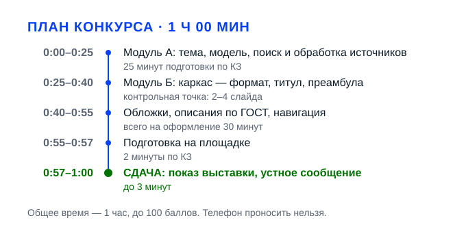
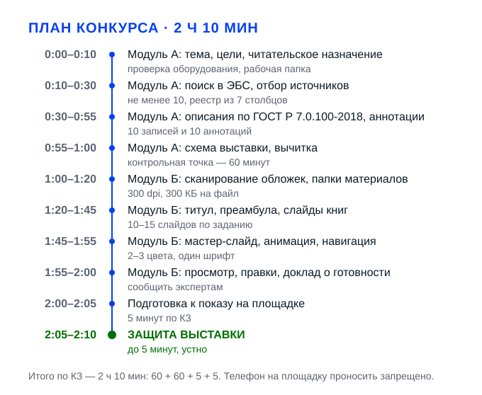
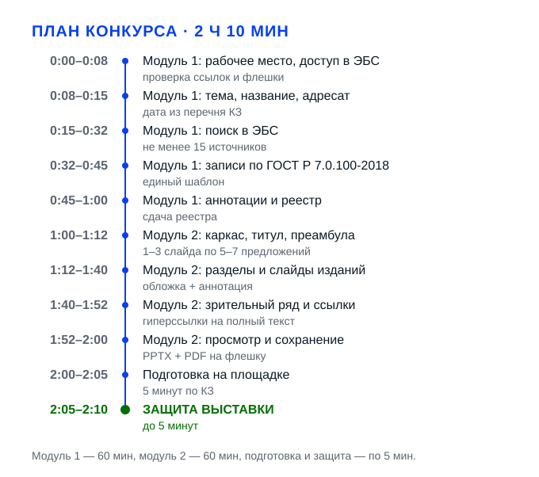

Библиотечно-информационная деятельность (Р)
Задания ниже — официальные файлы «Абилимпикс» (источник: abilympics-russia.ru), разложенные по категориям. Решения написаны по тексту задания, регламенту и критериям оценки; в них указано, что именно проверяет эксперт.
Школьник
14–16 лет, базовый уровень заданияВыдержка из официального конкурсного задания: страницы, относящиеся к категории «Школьник» (стр. 6–7 источника).
Пошаговое решение
Задание для школьников короткое по формулировке и плотное по содержанию: за один час нужно собрать виртуальную книжную выставку — презентацию из пяти-семи слайдов по одной из 56 тем перечня: юбилеи писателей, дни воинской славы, памятные даты. Час делится на два модуля: 25 минут на поиск и выявление информации, затем 30 минут на оформление выставки, 2 минуты на подготовку на площадке и до 3 минут на устное сообщение. Оценивают три позиции в Модуле А — организация работы, обработка информации, презентация — и отдельно Модуль Б, всего до 100 баллов. Темы даны списком, а требования к структуре перечислены по пунктам: титульный слайд с названием, составителем и организацией, преамбула на один-три слайда по 5-7 предложений, оформление в PowerPoint. Всё остальное — ваш замысел и ваша работа с источниками.

Задача 1. Выбрать тему и построить модель выставкиМодуль А · 25 минут · «Организация работы»
Первый модуль начинается не с компьютера, а с листа бумаги. За 25 минут подготовки нужно успеть четыре вещи: выбрать тему из перечня так, чтобы под неё нашлись книги, сформулировать название, определить цели, задачи и читательский адрес, а затем нарисовать схему из пяти-семи слайдов. Это ровно то, что в задании названо разработкой модели электронной книжной выставки. Модель, нарисованная до PowerPoint, экономит время в Модуле Б: слайды собираются по готовому плану, а не придумываются на ходу.
Действие 1.1. Разобрать тему и определить замысел
Шаг 1.1.1
Берём перечень из задания — в нём 56 позиций для школьников: юбилеи писателей и поэтов, дни воинской славы, памятные даты. Просматриваем список один раз целиком, не задерживаясь, и выписываем на лист три-четыре темы, по которым вам действительно есть что сказать. Дальше проверяем каждую по двум признакам: наберётся ли по ней хотя бы шесть-восемь изданий в фонде и в открытом доступе и хватает ли зрительного ряда — портретов, обложек, фотографий. Тему, у которой одного из двух признаков нет, отчёркиваем сразу и идём дальше по списку, не пытаясь её спасти.
Тема — фундамент всей работы, и от неё зависит, будет ли выставка полной. На выбор из 56 позиций уходит не больше пяти минут из 25, но именно эти минуты решают, окажетесь вы с восемью книгами или с тремя. Тема, взятая только потому, что стоит первой в списке, к десятой минуте поиска разваливается: книг в фонде мало, описания составлять не из чего. Критерий «Организация работы» — про умение считать ресурсы до начала действия.
На листе три-четыре темы, и рядом с каждой в скобках стоит число: сколько изданий нашли и какой иллюстративный ряд доступен. Если у темы меньше шести позиций — это не тема выставки, а заметка на один слайд, и её место в конце списка. Хороший признак — когда по теме сразу вспоминаются три-четыре конкретные книги, а не только фамилия юбиляра.
Взять юбилей известного автора «на слух», не проверив фонд: половина зала выбирает одно и то же, а книг на всех не хватает. Вторая ошибка — метаться между темами до конца модуля: время кончилось, а модели нет, и в Модуль Б вы входите с пустым листом вместо схемы.
Смотрит, есть ли на столе обоснование выбора: список тем с пометками и числами. Это первое, что видно, когда эксперт подходит к рабочему месту в первые минуты, и по этому листу он понимает, думал участник или взял что попало.
Шаг 1.1.2
Придумываем название так, чтобы оно работало на титульном слайде: короткая формула в кавычках и подзаголовок с точной датой и именем. Для 130-летия Сергея Есенина это может быть «Страна берёзового ситца» : Сергей Есенин, 130 лет со дня рождения. Пишем заголовок от руки крупно и смотрим, влезает ли он в две строки рядом с фамилией составителя и названием организации. Если не влезает — укорачиваем формулу, а не кегль: мелкий заголовок перестаёт быть заголовком.
Титульный слайд по заданию несёт название выставки, ФИО составителя и информацию об организации, и он же задаёт смысловую нагрузку всей работы. Название-штамп «Виртуальная книжная выставка, посвящённая...» читается как отписка, а точная формула сразу показывает, что выставка придумана. Это первое, что оценивают в критерии «Презентация», и первое, что вообще видят на экране.
Название укладывается в две строки, в нём нет слов «выставка», «виртуальная», «посвящённая», зато есть имя и дата. Прочитайте вслух: если спотыкаетесь на середине — сокращайте, на слайде будет ещё хуже, потому что там нет интонации. Хороший тест — пересказать название товарищу по памяти после одного прочтения.
Оставить название на конец работы: к моменту вёрстки его уже не переделать, а именно оно первым бросается в глаза. Вторая ошибка — заголовок в пятнадцать слов, который на слайде рассыпается на четыре строки и наезжает на картинку, и вы начинаете двигать портрет вместо текста.
Смотрит на титульный слайд первым делом и проверяет, читается ли тема без пояснений. Если приходится вчитываться — название не работает, и это видно за пять секунд.
Шаг 1.1.3
На том же листе формулируем три строки. Цель: продвижение книги и привлечение читателей в библиотеку, применение цифровых технологий в выставочной деятельности. Адрес: для кого выставка — например, для шестых-восьмых классов школы и их родителей. Результат: что читатель унесёт — пять-семь книг, которые захочется взять. Задачи пишем глаголами: выявить, отобрать, описать, оформить, представить, — и каждая задача потом превращается в один блок работы.
Модуль А по заданию начинается с определения целей и задач выставки, и это же требование к квалификации школьника: уметь организовывать собственную деятельность, определять её цели и задачи. Без читательского адреса невозможно отобрать источники — одна и та же книга годится для пятого класса и не годится для девятого. Адрес задаёт и язык преамбулы: для младших нужны короткие фразы, для старших можно говорить о времени и контексте.
Три строки на листе: цель, адрес, результат. Если цель звучит как «сделать выставку» — это название работы, а не цель; переформулируйте через читателя и через книгу. Проверьте себя вопросом: что изменится для читателя после того, как он посмотрит эти пять слайдов.
Пропустить адрес и собрать выставку «для всех»: тексты выходят либо детскими, либо наукообразными, и на защите нечем объяснить, почему выбраны именно эти книги. Вторая ошибка — написать пять целей вместо одной и запутаться, какую из них вы вообще реализуете.
На защите задаёт вопрос «для кого эта выставка» — по ответу сразу видно, продумана модель или нет. Ответ в одно предложение с указанием класса и интереса читателя считается полным.
Действие 1.2. Нарисовать схему выставки
Шаг 1.2.1
Рисуем схему на одном листе: прямоугольники-слайды, всего от пяти до семи, и подписываем каждый. Первый — титул, следующие один-три — преамбула о персоне или теме, дальше разделы с книгами, последний — завершение. Под каждым прямоугольником пишем, что именно там будет: портрет, обложка, цитата, библиографическое описание, — и проводим между ними стрелки, показывая, куда ведёт навигация.
Схема — это и есть разработка модели, с которой начинается задание. Без неё слайды собираются в случайном порядке, и на шестом выясняется, что титул с преамбулой съели четыре из пяти разрешённых. Пять-семь слайдов — жёсткая рамка, и лучше упереться в неё на бумаге, чем в PowerPoint за десять минут до сдачи, когда переверстка стоит уже половины модуля.
На листе пять-семь прямоугольников, у каждого подпись и назначение, структура читается сверху вниз: титул, вступление, книги, финал. Если прямоугольников девять — режьте сейчас, пока это стоит одну минуту и одно движение карандашом, а не полчаса переносов на слайдах.
Начать сразу в PowerPoint: слайды плодятся, потому что «жалко выбросить», и к сдаче их оказывается десять. Формальное требование задания нарушено, а переделывать нечем — времени на переверстку уже нет, и вы сдаёте работу с заведомо снятыми баллами.
Просит показать схему или лист с пометками: по нему видно, планировал участник работу или импровизировал. Ровные прямоугольники с подписями читаются как проект, а не как надежда на вдохновение.
Шаг 1.2.2
Размечаем объём: на слайде преамбулы 5-7 предложений, не больше, иначе текст не читается с экрана. Считаем заранее: один-три слайда преамбулы — это примерно 10-18 предложений биографической справки, остальное уходит в подписи под обложками. Рядом с каждым прямоугольником ставим две цифры: сколько предложений и сколько изображений, — и держим этот счёт до самого конца работы.
Норма 5-7 предложений взята из задания дословно, и она же физиологична: с трёх метров двадцать пятый кегль читается, а двадцать предложений на слайде не читаются вообще. Заранее посчитанные предложения защищают от главной беды школьных презентаций — ползущего мелкого текста на весь слайд, который никто, включая автора, не станет читать вслух.
У каждого слайда стоит цифра: три-пять предложений и одно-два изображения, сумма по преамбуле укладывается в восемнадцать. Если где-то написано «двадцать» — это уже не слайд, а реферат, и вылезет он именно на защите, когда вы начнёте читать с экрана.
Перенести в презентацию весь найденный текст: слайд превращается в страницу, зритель перестаёт слушать, а эксперт фиксирует нарушение требований к оформлению. Плотный текст ещё и выдавливает картинку — и выставка теряет зрительный ряд, ради которого делалась.
Смотрит плотность слайда: число строк и кегль. Перегруженный слайд видно за пять метров, и никакие пояснения про «там всё важное» этого не исправляют.
Шаг 1.2.3
Перед работой раскладываем на столе то, что разрешено иметь: ноутбук, мышь, блокнот, ручку, карандаш, бумагу, флеш-карту. На рабочем столе создаём папку с коротким именем — например, ВКВ_Есенин — и внутри три подпапки: ТЕКСТ, ИЛЛЮСТРАЦИИ, ИТОГ. Телефон убираем сразу: на площадку его проносить нельзя, и обнаруженный на столе аппарат — отдельная неприятность, которая стоит дороже, чем весь выигрыш от него.
Порядок на рабочем месте входит в критерий «Организация работы», а отдельная папка прямо названа в задании: материалы складываются заранее, чтобы не искать обложку по всему диску в последние пять минут. Три подпапки разделяют то, что легко перепутать: черновой текст, картинки и готовый файл, — и к концу модуля вы точно знаете, что сдавать.
На столе нет ничего лишнего, папка создана и открыта в проводнике, внутри три пустые подпапки. Телефона на столе нет — это проверяют отдельно, и объяснение «он выключен» не принимается. Флеш-карта лежит на видном месте, а не в рюкзаке под столом.
Складывать всё в «Загрузки» и на рабочий стол: через полчаса там двадцать файлов с именами вида IMG_2231, и нужная обложка ищется дольше, чем сканируется заново. Вторая ошибка — держать единственную копию на рабочем столе, где её легко перетащить в чужую папку.
Оценивает организацию работы в первые минуты: чистый стол, открытая папка, отсутствие телефона. Это тот балл, который легко взять и легко потерять, ничего не делая специально.
Задача 2. Выявить, отобрать и обработать источникиМодуль А · «Обработка информации»
Здесь делается главное, за что дают баллы в Модуле А: в результате задания должно быть написано, что источники по теме выявлены и проведена аналитико-синтетическая обработка документов. По-русски это значит: найти книги через справочно-библиографический аппарат, отобрать из них те, что работают на замысел, и превратить каждую в аккуратную запись с описанием и аннотацией. Именно этот блок отличает выставку библиотекаря от подборки картинок из интернета, и именно здесь теряется больше всего баллов из-за спешки.
Действие 2.1. Пройти по справочно-библиографическому аппарату
Шаг 2.1.1
Определяем, где искать, и идём по трём контурам. Первый — справочно-библиографический аппарат библиотеки: алфавитный каталог по фамилии автора, систематический по отраслям (художественная литература — индекс 84, литературоведение — 83.3) и электронный каталог. Второй — сам фонд на полках, где книги стоят по тем же индексам. Третий — открытые сетевые ресурсы: сайты библиотек, электронные библиотечные системы, порталы с оцифрованными изданиями. По каждому контуру на листе оставляем строчку с тем, что нашлось.
«Выявлены источники по теме» — так сформулирован результат Модуля А, и это ядро профессиональной работы: не «погуглить», а пройти по СБА. Каталог даёт точные описания и проверенные издания, а не случайные файлы из первой выдачи поисковика, где половина ссылок ведёт на копии без выходных данных. Без каталога вы просто не сможете заполнить графу «год» и «издательство», а без них описания не будет.
На листе выписаны все три контура и то, что в каждом нашлось. Если поиск шёл только в интернете — вернитесь к каталогу: без него описания придётся сочинять, и это видно по первой же строке. Хороший признак — в списке есть хотя бы одно издание, которого нет в сети, но которое стоит на полке.
Искать только в поисковике и брать первые пять ссылок: у половины нет года и издательства, описание составить не из чего, а на защите не объяснить, почему выбрана именно эта книга. Вторая ошибка — брать всё из одной электронной библиотеки, где набор случайный, а не собранный по теме.
Смотрит, пользовался ли участник каталогом: это видно по названиям найденных изданий и по записям в блокноте. Записи с индексами и рубриками он читает как след настоящей работы.
Шаг 2.1.2
Формулируем запрос в три захода. Сначала по фамилии: «Есенин» в алфавитном каталоге и в строке поиска электронного каталога. Потом по теме: «Есенин и русская поэзия», «поэты Серебряного века», «берёза в русской поэзии». Затем по виду издания: сборники стихов, биографии, альбомы, книги для школьников. Каждый запрос записываем в блокнот вместе с числом найденных записей и датой поиска.
Поиск по одному слову даёт сотни записей, и в них тонет нужное. Три захода — это методика: от точного совпадения к тематическому полю, а затем к виду издания. Записанные запросы нужны и на защите: эксперт спрашивает, как искали, и по записям видно, что работа велась осмысленно, а не наугад по первой ссылке.
В блокноте три-четыре строки запросов, у каждого — число найденных записей. Есть хотя бы один запрос по индексу или рубрике, а не только по слову, и хотя бы один, который дал меньше десятка записей: значит, он был точным. Если все запросы дают по тысяче — вы ещё не искали, а только смотрели.
Ввести фамилию, взять первые три карточки и остановиться: выставка получится из случайных изданий, среди которых может не быть ни одного сборника стихов. Вторая ошибка — искать только по фамилии и не заметить, что половина нужных книг описана под заглавием, без автора в начале записи.
Смотрит блокнот: короткие записи с цифрами говорят больше, чем рассказ о том, как всё было хорошо. По ним же он проверяет, умеет ли участник вообще формулировать запрос.
Шаг 2.1.3
Заводим таблицу на листе или в файле: номер, автор, заглавие, год, вид издания, где найдено, есть ли аннотация, есть ли обложка. Каждую находку вносим сразу, одной строкой, не откладывая на потом. Целевой объём — 12-15 строк, из которых в выставку пойдут 6-9: запас нужен, потому что часть изданий отсеется по возрасту, доступности или качеству обложки.
Таблица — это рабочая картотека, то есть тот же справочно-библиографический аппарат, только свой, на один час. Она спасает от потери находок и позволяет отбирать по признакам, а не по памяти. Двенадцать строк набираются за десять минут, а вот восстановить забытую книгу потом невозможно: вы помните цвет корешка, но не год издания.
В таблице не меньше двенадцати заполненных строк, у каждой есть год и место находки. Пустые графы видны сразу — значит, по этой книге ещё нужно вернуться к описанию. Если строк меньше восьми, поиск был слишком узким: расширьте запрос по теме, а не по фамилии.
Записывать «потом, я запомню»: к моменту оформления помнятся две книги из десяти, а третья всплывает в памяти без автора и года. Вторая ошибка — вести таблицу на клочках и потерять половину между модулями, когда стол перекладывают.
Оценивает системность: таблица с ровными столбцами читается как работа библиотекаря, а список из пяти слов — как набросок, сделанный за минуту до звонка.
Действие 2.2. Отобрать источники для экспонирования
Шаг 2.2.1
Отбираем по четырём признакам, каждый отмечаем плюсом или минусом в таблице: соответствует теме и читательскому адресу, доступна (есть в фонде или легально в открытом доступе), годится по возрасту (для шестого-восьмого класса не берём исследования для аспирантов), даёт хороший зрительный ряд — читаемую обложку и иллюстрации. Из двенадцати строк после отбора должно остаться шесть-девять, и каждая оставленная должна выдерживать вопрос «почему именно она».
Отбор — содержательная часть аналитико-синтетической обработки: из потока выбирается то, что работает на цель выставки. Четыре признака превращают вкусовщину «мне нравится» в решение, которое можно объяснить. Именно за это в Модуле А отвечает критерий «Обработка информации», и именно здесь видно, читал участник книги или только видел названия.
У каждой оставленной книги минимум три плюса, у отброшенной — хотя бы один минус с объяснением. Если отбросили всё — вернитесь к теме, если не отбросили ничего — отбор был формальным. Правильный результат выглядит как 6-9 строк с тройными плюсами и 4-5 зачёркнутых с пометкой причины.
Оставить всё, что нашлось, «чтобы было больше»: в пять-семь слайдов влезает шесть-девять обложек, остальные превращаются в мелкие иконки, и выставка теряет читаемость. Вторая ошибка — отобрать только по внешнему виду обложки, а потом обнаружить, что книга не по адресу.
Спрашивает, почему выбрана та или иная книга. Ответ «известная» слабее ответа «единственный сборник стихов этого автора в фонде, с иллюстрациями». По ответу он понимает, работает участник с фондом или с картинками.
Шаг 2.2.2
Проверяем, что в отобранном наборе есть обязательные позиции: сам автор и его главная книга, издание с хорошим портретом, книга-«вход» для того, кто ещё не читал (тонкий сборник, книга для школьников), и одна позиция «вокруг» — воспоминания, литературоведение, альбом. Если тема событийная, ядро другое: событие, его участники, документы, художественные отклики — но принцип тот же, четыре разные роли.
Ядро — это каркас, который держит выставку, даже если часть обложек придётся убрать. Задание называет выставку собранием специально подобранных и систематизированных произведений, то есть набор должен быть системой, а не пачкой. Система видна читателю: он понимает, с чего начать и куда идти дальше, а не листает восемь похожих корешков.
В таблице отмечены роли: главная книга, портретное издание, книга-вход, книга-контекст. Если одна роль пустая — набор неполный, даже если книг восемь. Проверьте набор глазами читателя: что он возьмёт первым и почему.
Собрать восемь сборников одного автора без биографии и без контекста: выставка получается плоской, читателю не за что зацепиться, а на защите нечего сказать о замысле. Вторая ошибка — взять книгу-контекст, которая не читается школьником: она висит на слайде мёртвым грузом.
Смотрит структуру набора: есть ли вход для новичка и опора для того, кто уже читал. Набор из однотипных изданий он отмечает как отсутствие системы и потому неполный замысел.
Шаг 2.2.3
Оставляем в таблице итоговые шесть-девять строк и переписываем их на отдельный лист в том порядке, в каком они пойдут на слайдах: от книги-входа к главной книге или наоборот, но с осознанным движением. Напротив каждой ставим номер слайда, где она будет. Отброшенные строки не стираем, а зачёркиваем: они пригодятся, если какая-то обложка не отсканируется или издание окажется недоступным.
Порядок экспонирования — часть замысла: читатель идёт по выставке, а не листает свалку. Привязка к номерам слайдов экономит время в Модуле Б, где на всё оформление тридцать минут. Зачёркнутый резерв — страховка: сканер иногда даёт сбой, и замена нужна в ту же минуту, а не через двадцать, когда искать уже нечего.
Итоговый лист: шесть-девять позиций, у каждой номер слайда, порядок читается как маршрут. Зачёркнутые строки на месте. Если номер слайда повторяется дважды — на этом слайде будет тесно, переставьте одну позицию в резерв.
Держать отбор в голове и начать оформление «по памяти»: на четвёртом слайде выясняется, что две книги дублируют друг друга, а третьей не хватает обложки. Вторая ошибка — потерять лист отбора и восстанавливать его по сканам, которые лежат без имён.
Сравнивает лист отбора с тем, что появилось на слайдах: совпадение говорит о дисциплине, а расхождение — о том, что работа шла без плана. Отбор без листа он считает импровизацией.
Действие 2.3. Сделать аналитико-синтетическую обработку
Шаг 2.3.1
На каждую отобранную книгу составляем описание по схеме ГОСТ Р 7.0.100-2018: фамилия и инициалы автора, заглавие, сведения об ответственности, издание, место, издательство, год, объём. В строку это выглядит так: Есенин, С. А. Стихотворения и поэмы / С. А. Есенин. — Москва : АСТ, 2020. — 320 с. Проверяем каждое описание по титульному листу и обороту, а не по обложке: на переплёте издательство часто указано иначе, чем в документе.
Стандарт назван в задании, и описание — самая заметная часть профессиональной работы: по нему эксперт сразу видит, умеет ли участник обращаться с книгой как с документом. Ошибка в годе или в инициалах обесценивает подпись под обложкой, потому что по такому описанию книгу не найти ни в каталоге, ни на полке.
В каждом описании есть все восемь элементов, точки и тире на местах, инициалы после фамилии, город издания в той форме, что на титуле. Сверьте последнюю цифру страниц — она чаще всего и ошибается, потому что её пишут по памяти. Пробегите глазами по разделителям: перед местом издания и после года стоят точка и тире.
Писать «Есенин С. Стихи, Москва, 2020»: так книга не опознаётся, и по такой записи её не найдёт ни читатель, ни библиотекарь. Вторая ошибка — брать данные с сайта магазина, где год и издательство часто перепутаны или указан год переиздания вместо года выпуска.
Читает описания построчно: порядок элементов, разделительные знаки, точность выходных данных. Одна такая запись для него — образец, по которому он судит обо всех остальных.
Шаг 2.3.2
Под каждой книгой — две-три строки от себя: о чём она и кому её брать. Это рекомендательная аннотация: не пересказ содержания, а мостик к читателю. На слайд преамбулы берём одну короткую цитату, не длиннее двух строк, с точным указанием, откуда она. Цитаты проверяем по печатному источнику, а не по цитатникам в соцсетях, где строки гуляют без автора.
Задание прямо говорит, что текст, раскрывающий зрительный ряд, состоит из цитат, аннотаций, биографических справок. Аннотация превращает список книг в рекомендацию, а цитата даёт голос самому автору. Приписанная не тому автору цитата — самая частая и самая заметная ошибка в школьных выставках, и она перечёркивает аккуратность всей остальной работы.
Под каждой обложкой есть аннотация в две-три строки, у каждой цитаты указан источник. Прочитайте цитату вслух: она укладывается в две строки и не обрывается на полуслове. Проверьте, что аннотация говорит читателю, стоит ли брать книгу, а не пересказывает сюжет до развязки.
Взять цитату из паблика с красивой картинкой: половина таких подборок приписывает строки не тем авторам, и одна такая ошибка перекрывает всю остальную работу. Вторая ошибка — аннотация в пять строк, которую на слайде всё равно никто не прочитает.
Проверяет одну-две цитаты и спрашивает источник. Точность здесь ценится выше красоты, и ссылка на конкретное издание снимает все вопросы. Аннотацию он читает как рекомендацию читателю, а не как пересказ сюжета.
Шаг 2.3.3
Проходим по всем описаниям подряд и приводим их к одному виду: одинаковые сокращения, одинаковый порядок элементов, одинаковое оформление тире. Отдельно проверяем имена: инициалы, полное имя в преамбуле, единое написание фамилии на всех слайдах. Затем читаем всё вслух — так слышны пропущенные слова и лишние повторы, которых не видно на экране. Идём по порядку, от титула к финалу.
Единообразие — признак аппарата, а не украшение: читатель должен узнавать структуру записи с первого взгляда. Разнобой («С. Есенин» на одном слайде и «Есенин Сергей» на другом) читается как небрежность, хотя каждая запись по отдельности верна. К тому же единый шаблон экономит время: последние записи делаются вдвое быстрее первых.
Наложите описания друг на друга: элементы стоят в одном порядке, тире одинаковой длины, сокращения совпадают. В именах нет разночтений. Читая вслух, отметьте места, где вы запнулись, — почти всегда там пропущено слово или стоит лишняя запятая.
Проверять каждое описание отдельно и не свести их вместе: по отдельности всё верно, рядом — разнобой, который эксперт замечает сразу. Вторая ошибка — оставить в описаниях разные сокращения: «М.» на одном слайде и «Москва» на другом.
Сравнивает два-три описания между собой — на этом тесте разнобой виден моментально, и ему не нужно читать все записи целиком. Единый шаблон он считает признаком настоящего аппарата.
Задача 3. Собрать выставку из 5-7 слайдовМодуль Б · 30 минут на оформление · «Презентация»
Тридцать минут — это ровно столько, чтобы собрать пять-семь слайдов по готовой схеме, но никак не столько, чтобы придумывать оформление. Поэтому работа идёт тремя проходами: сначала каркас (формат, титул, преамбула), потом зрительный ряд и текст под обложками, потом навигация и оформление. Каждый проход заканчивается проверкой, чтобы не возвращаться назад. Формат — Microsoft PowerPoint, как сказано в задании, и это удобно: всё, что нужно, есть в стандартном наборе инструментов.
Действие 3.1. Поставить каркас: формат, титул, преамбула
Шаг 3.1.1
Открываем PowerPoint, создаём пустую презентацию и первым делом ставим формат 16:9: вкладка «Дизайн», «Размер слайда», «Широкоэкранный» — это 33,87 на 19,05 сантиметра. Выбираем одну тему оформления на всю выставку, один шрифт для заголовков и один для текста. Сразу включаем номера слайдов. Дальше создаём пять пустых слайдов — ровно по числу прямоугольников из схемы, — и больше не добавляем: лишний слайд потом придётся удалять вместе с содержимым.
Формат и единая тема — рамка, внутри которой всё дальше будет держаться. Если начать с 4:3, а потом переключить, объекты съедут, и выравнивать придётся заново — на это уходит половина тридцати минут. Два шрифта и номера слайдов дают ровный читаемый ряд, который и оценивают в критерии «Презентация»: единство видно раньше, чем содержание.
Все слайды широкоэкранные, тема одна, шрифты заданы в образце слайда, номера видны. Создайте пять пустых слайдов по числу прямоугольников из схемы и убедитесь, что новый слайд наследует то же оформление, а не открывается с чистого листа.
Собирать каждый слайд в своём оформлении и со своим шрифтом: к пятому слайду презентация выглядит как коллаж, а переделывать её уже нет времени — выравнивание восьми объектов на пяти слайдах не влезает в оставшиеся минуты.
Смотрит ряд слайдов целиком: одинаковые поля и шрифты видны сразу, как и их отсутствие. По этому он делает первый вывод о том, умеет ли участник держать единый стандарт.
Шаг 3.1.2
На первом слайде — три обязательных элемента: название выставки крупно, под ним подзаголовок с датой и именем, ниже мелким кеглем ФИО составителя и название организации. Плюс один визуальный образ: портрет, обложка или фрагмент иллюстрации, но не больше одного. Кегль названия 40-54, подзаголовка 24-28, подписи 16-18. Всё выравниваем по левому краю или по центру — но так, чтобы линия была одна.
Титульный слайд назван в задании отдельно, и в нём перечислены именно эти три элемента: название, ФИО составителя, информация об организации. Он же первое, что видит эксперт, и по нему складывается впечатление о всей работе. Три размера кегля создают иерархию: глаз идёт от названия к подписи, и слайд читается за две секунды.
На слайде читаются все три элемента, название не обрезано полями, изображение не наезжает на текст. Отойдите на три шага от экрана — подпись должна читаться, а не угадываться. Проверьте, что название не разорвано переносом на середине слова.
Забыть организацию или ФИО: формальное требование задания не выполнено, и это стоит баллов при всей красоте слайда. Вторая ошибка — растянуть картинку на весь слайд и потерять текст, который на пёстром фоне просто исчезает.
Проверяет наличие трёх элементов на титуле — это делается механически, по чек-листу, и отсутствие любого из них фиксируется без обсуждения. Титул он смотрит раньше остальных слайдов.
Шаг 3.1.3
На втором-третьем слайде — преамбула о персоне или теме: 5-7 предложений на слайд, портрет или фотодокументы, даты жизни и одна ключевая мысль о том, почему эта дата важна. Текст режем на короткие абзацы по два-три предложения и ставим слева, изображение справа, чтобы взгляд шёл слева направо. Проверяем, что текст уместился без переноса за поля, и что между абзацами есть интервал, а не сплошная стена.
Преамбула — вводная часть, без которой читателю непонятно, зачем смотреть дальше: в задании на неё отведено от одного до трёх слайдов и указано 5-7 предложений на слайд. Именно здесь чаще всего появляется перегруз — биографию хочется рассказать целиком, а места хватает на пять предложений. Пять хороших предложений работают лучше двадцати, которые никто не дочитает.
На каждом слайде преамбулы не больше семи предложений, есть изображение, текст не заходит за поля и не наезжает на картинку. Прочитайте с расстояния вытянутой руки — всё различимо, ничего не обрезано краем экрана, даты жизни стоят единообразно.
Перенести в преамбулу статью из энциклопедии: слайд тонет в тексте, зритель перестаёт читать, а на защите вы читаете вслух то, что и так на экране. Это самая частая причина того, что показ не укладывается в три минуты.
Смотрит объём текста и наличие изображения: соотношение текста и картинки в преамбуле оценивается отдельно, и перекос в любую сторону виден сразу. Пять предложений на слайд он считает нормой, двадцать — нарушением.
Действие 3.2. Разместить зрительный ряд и подписи
Шаг 3.2.1
Обложки готовим заранее, в подпапке ИЛЛЮСТРАЦИИ: сканируем на сканере в 300 dpi или снимаем ровно, без блика, затем кадрируем по краю обложки. На слайде выставляем единую высоту — например, девять сантиметров, — выравниваем по нижней линии и распределяем с равными промежутками. Наклон и поворот убираем: книги должны стоять ровно, как на полке. Для выравнивания пользуемся инструментами «Выровнять» и «Распределить по горизонтали», а не глазом и мышью.
Зрительный ряд — обложки, развороты, иллюстрации — это то, что отличает выставку от списка литературы. Единая высота и общая нижняя линия превращают шесть разных обложек в ряд, а разнокалиберные картинки читаются как небрежность. Триста точек на дюйм нужны, чтобы при показе на большом экране обложка не расплылась в цветное пятно.
Все обложки одной высоты, стоят на одной линии, промежутки равные, ни одна не растянута. Включите показ на весь экран: мелкие надписи на обложках не должны превращаться в кашу. Проверьте, что у всех картинок сохранены пропорции — при растягивании они ломаются.
Вставлять обложки «как есть», растягивая по месту: пропорции ломаются, книга выглядит расплющенной, а ряд — кривым. Вторая ошибка — снимок с бликом от лампы: половина названия не читается, и обложка перестаёт работать как образ книги.
Оценивает качество зрительного ряда: резкость, ровность, единообразие. Это видно без увеличительного стекла — достаточно одного взгляда на слайд с тремя книгами.
Шаг 3.2.2
Под каждой обложкой ставим описание и аннотацию: кегль 14-16 для описания, 16-18 для аннотации, интервал 1,15. Следим за воздухом: поля не меньше полутора сантиметров, между блоками одинаковые промежутки. На слайде с тремя книгами текст идёт в три колонки одинаковой ширины, а не сплошным абзацем. Колонки выравниваем по верхнему краю, чтобы блоки начинались на одной линии.
Читаемость — не вкусовщина: с экрана на расстоянии трёх метров двадцать пятый кегль читается, четырнадцатый уже нет. Воздух вокруг текста позволяет глазу зацепиться за блок, а не скользить по сплошному полю. Разный кегль описания и аннотации даёт иерархию, из-за которой запись узнаётся как запись, даже если читатель не разбирает слов.
Поля одинаковые на всех слайдах, между блоками равные промежутки, ни один текст не заходит на изображение и не обрезан. В режиме показа прочитайте описание с трёх шагов: если приходится приближаться — кегль мал, и это надо править, а не надеяться на экран.
Уместить три книги на слайд, ужав текст до двенадцатого кегля: формально всё есть, а читать невозможно — и эксперт, и зритель видят только серое пятно. Вторая ошибка — текст, который наезжает на обложку и закрывает название книги.
Смотрит плотность и кегль: слишком мелкий текст под обложкой — типичная потеря баллов за презентацию, и замечается она быстрее, чем ошибка в описании.
Шаг 3.2.3
Доводим оформление: не больше трёх цветов во всей презентации — фон, текст, акцент. Фон светлый, текст тёмный, акцент один, например цвет обложки главной книги. Разделы подписываем одинаково: плашка или линия с названием раздела в одном и том же месте. Цитату ставим крупно, курсивом, с указанием автора строк — и следим, чтобы она не спорила с фоном по цвету.
Цветовая гамма, яркость фона и цвет шрифта названы в задании среди элементов оформления. Три цвета держат единство, а пёстрый фон убивает контраст, и текст на нём читается хуже. Одинаковые плашки разделов работают как навигация: читатель понимает, где он находится, и выставка начинает читаться как целое, а не как набор слайдов.
Сосчитайте цвета: три. Проверьте контраст — прищурьтесь, текст должен оставаться читаемым пятном. Плашки разделов стоят в одном месте на всех слайдах, а акцентный цвет не гуляет от слайда к слайду: если акцент красный, он красный везде.
Поставить фон-фотографию и светлый шрифт: текст исчезает на пёстрых участках, и половина подписей не читается. Вторая ошибка — по своему цвету на каждый слайд, из-за чего выставка распадается на куски, а эксперт видит отсутствие единого решения.
Отмечает единство оформления и контраст: разноцветная презентация читается как набор чужих слайдов, даже если каждый по отдельности аккуратен. Плашки разделов он проверяет на постоянство места.
Действие 3.3. Сделать выставку проходимой
Шаг 3.3.1
Делаем выставку проходимой: на слайде с разделами ставим гиперссылки на соответствующие слайды, а на слайдах книг — маленькую кнопку возврата к разделам. Проверяем каждую ссылку в режиме показа: клик должен вести туда, куда обещано. Финальный слайд — завершение с цитатой и короткой строкой о том, что представлено и где эти книги взять. Все ссылки делаем через вкладку «Вставка», «Связь», «Место в документе», а не через файлы на диске.
Гипертекстовые ссылки и интерактив названы в задании как то, что отличает виртуальную выставку от традиционной. Навигация превращает пять-семь слайдов в выставку, по которой можно ходить, а не только листать её по порядку. Проверка ссылок обязательна: битая ссылка в показе выглядит хуже, чем её отсутствие, потому что ломает ваш же рассказ.
Каждая ссылка проверена в режиме показа, возврат работает со всех слайдов, финальный слайд на месте. Пройдите выставку целиком так, как это сделает зритель: с титула в разделы, из разделов к книгам и обратно. Если на каком-то шаге вы задумались, куда нажать, — читатель тоже задумается.
Наставить ссылок и не проверить: одна ведёт не туда, и в показе вы теряетесь на глазах эксперта, тратя те самые три минуты. Вторая ошибка — финальный слайд «Спасибо за внимание» без содержания, который обрывает выставку на пустом месте.
Пробует навигацию сам или просит показать: работающие ссылки — заметный плюс к презентации, потому что это ровно то, чего в обычном школьном докладе не бывает.
Шаг 3.3.2
Оставляем анимацию только там, где она объясняет: появление обложек по одной, чтобы можно было рассказывать про книгу, пока она не появилась. Один тип эффекта на всю презентацию — «Появление» или «Плавное введение», длительность полсекунды, по щелчку, а не автоматически. Вращения, качания и звуки убираем совсем: они не несут смысла и съедают время показа.
Эффекты анимации в задании упомянуты, но у анимации служебная роль: управлять вниманием. Один эффект и щелчок дают вам контроль над темпом рассказа, а автоматическая смена слайдов заставляет говорить быстрее, чем вы успеваете. Пёстрые эффекты отвлекают от содержания и на защите выглядят как попытка заменить им пустоту.
Все эффекты одного типа, длительность одинаковая, запуск по щелчку. В режиме показа пройдите всю выставку: ничего не дёргается и не летает, обложки появляются ровно тогда, когда вы о них заговорили, и ни один эффект не задерживает показ больше чем на секунду.
Включить «Кубик» и «Панораму» на все объекты: показ превращается в аттракцион, время уходит, а на вопрос о книге вы отвечаете, не успев переключиться. Вторая ошибка — автоматическая смена слайдов по времени, из-за которой вы не успеваете сказать главное.
Смотрит, помогает ли анимация рассказу: один эффект — норма, десять — сигнал, что содержание не продумано и его пытаются украсить движением. Автоматическую смену слайдов он отмечает отдельно.
Шаг 3.3.3
Прогоняем текст проверкой орфографии: вкладка «Рецензирование», «Правописание», и не пропускаем ни одного подчёркнутого слова. Имена собственные проверяем глазами — автопроверка их не знает. Отдельно проверяем даты: год рождения, год юбилея, число лет. Затем смотрим, что финальный слайд даёт читателю: куда идти за книгами и что ещё почитать по этой теме.
Опечатки в фамилиях и датах — самая обидная потеря: содержание сделано, а юбилей посчитан неверно. Автопроверка не ловит имена, поэтому их смотрим вручную по титульным листам. Финальный слайд замыкает выставку и подсказывает читателю следующий шаг — это и есть обслуживание, ради которого она делается.
Ни одного подчёркнутого слова, дата юбилея пересчитана по году рождения, фамилии сверены с описаниями. Финальный слайд содержит содержательную строку, а не только благодарность. Проверьте ещё и подписи под обложками — орфография в мелком тексте ловит не всё.
Оставить «Есенин» с одной «н» или посчитать 130-летие от неверного года: ошибка в фамилии на титуле видна всем, и впечатление от работы рушится. Вторая ошибка — не проверить финальный слайд, который остался черновиком с прошлой попытки.
Читает титул и подписи: одна опечатка в фамилии автора запоминается сильнее десяти удачных слайдов, и именно её он упомянет в комментарии. Дату юбилея он пересчитывает сам, по году рождения.
Задача 4. Проверить, отрепетировать и провести выставкуМодуль Б · 2 минуты на площадке + до 3 минут показа
Финальная часть стоит отдельно в тайминге: 2 минуты на подготовку на площадке и до 3 минут на проведение выставки. Здесь уже ничего не создаётся — только проверяется, репетируется и предъявляется. Именно на этом этапе теряются баллы, заработанные в двух модулях: файл не открылся, речь не уложилась в три минуты, рабочее место осталось неубранным. Порядок действий простой: прогон, чек-лист по заданию, копии файла, текст на три минуты, репетиция, показ, сдача места.
Действие 4.1. Прогнать и проверить по требованиям
Шаг 4.1.1
Запускаем показ с первого слайда — клавиша F5 — и проходим всю выставку так, как её увидит зритель: с навигацией, с анимацией, с переходами. Смотрим три вещи: не съехали ли шрифты, работают ли ссылки, не обрезается ли текст на краях. Всё найденное записываем на лист и правим после прогона, а не по ходу: правка на ходу сбивает показ и прячет следующие ошибки.
В обычном режиме редактирования часть дефектов не видна: обрезанный текст, шрифт-заменитель, неработающая ссылка проявляются только в показе. Прогон целиком занимает две минуты и ловит то, что потом стоит баллов. Записывать найденное на лист нужно, чтобы не править одно и то же место трижды и не забыть половину замечаний.
Выставка пройдена от титула до финала, ссылки работают, текст нигде не обрезан, шрифты те же, что при вёрстке. Список замечаний на листе закрыт полностью: каждое либо исправлено, либо сознательно оставлено и объяснено себе. Проверьте ещё, что показ стартует именно с первого слайда.
Проверять слайды по одному в режиме редактирования: на показе обнаруживается, что заголовок вылез за поле, а исправлять уже некогда, потому что вы стоите перед экспертом. Вторая ошибка — править по ходу прогона и потерять нить того, что уже проверено.
Иногда просит запустить показ до сдачи: именно здесь видны технические огрехи, и он отмечает, проверял участник свою работу или сдал первое, что получилось.
Шаг 4.1.2
Проходим по формальным требованиям с листом в руках: слайдов от пяти до семи; на титуле название, ФИО составителя, организация; преамбула один-три слайда по 5-7 предложений; описания по ГОСТ; оформление в PowerPoint. Каждый пункт отмечаем галочкой, а не «помню, что делал». Если слайдов шесть — хорошо, если восемь — режем сейчас, а не после сдачи. Список держим на столе до конца модуля.
Часть баллов теряется не на содержании, а на формате: восемь слайдов вместо семи, отсутствие организации на титуле, преамбула на четырёх слайдах. Это проверяется механически, и эксперт делает это первым делом. Список в руках надёжнее памяти, особенно на последних минутах, когда внимание занято речью.
Все пункты отмечены, число слайдов в норме, на титуле три элемента, в преамбуле не больше семи предложений на слайд. Сверяйтесь с исходным заданием, а не с тем, что помните: требования короткие, и их легко перечитать целиком за минуту.
Считать, что «и так понятно»: формальные несоответствия фиксируются без обсуждения, и спорить с ними нечем. Вторая ошибка — проверять по памяти и пропустить пункт, которого в задании не было в прошлом году.
Идёт по чек-листу задания: формат, число слайдов, обязательные элементы. Это самая быстрая часть его работы, и она даёт ему право дальше смотреть только на содержание.
Шаг 4.1.3
Сохраняем файл дважды: в формате .pptx и в PDF, оба — в подпапку ИТОГ, затем копируем на флеш-карту. Имя файла делаем понятным: фамилия участника и тема, без пробелов и лишних символов. На площадке открываем файл с флешки и убеждаемся, что шрифты и картинки на месте, — до того, как сообщить о готовности, а не после. Копию PDF проверяем отдельно: она должна открываться без предупреждений.
Два формата — страховка: PDF показывает всё ровно на любом ноутбуке, а .pptx нужен, если попросят открыть исходник. Проверка на площадке закрывает главный риск — шрифт-заменитель, из-за которого вёрстка едет и текст наезжает на картинки. Сообщать о готовности раньше проверки нельзя: показ начнётся с проблемы, а не с выставки.
На флешке два файла, оба открываются, PDF выглядит так же, как презентация. Шрифты не подменились, обложки не размылись, ссылки работают. Откройте PDF на весь экран и сравните с исходником: расхождения видно сразу, если они есть.
Принести один файл на флешке без копии: флешка не читается — и работать нечем. Вторая ошибка — открыть презентацию впервые на показе, когда до выступления остаются секунды. Третья — сохранить файл в старый формат, который на площадке не откроется.
Наблюдает, как участник открывает файл: спокойное открытие с флешки говорит о подготовленности, а поиск папки по всему диску — об обратном. Две копии он тоже замечает.
Действие 4.2. Подготовить текст экспонирования
Шаг 4.2.1
Пишем текст выступления на три минуты: это примерно 380-420 слов, то есть 40-50 секунд на слайд при шести слайдах. Структура простая: зачем эта выставка и для кого, что на первом слайде, по одной фразе на каждую книгу, чем выставка заканчивается. Пишем короткими фразами, которые можно произнести, а не прочитать. Каждую фразу проверяем вслух: если не хватает дыхания — делите на две.
Модуль Б заканчивается устным сообщением, и на него отведено до трёх минут: больше не дадут, меньше можно. Текст, написанный заранее, держит темп — без него половина времени уходит на «ээ» и поиск нужного слайда. Считанные слова — единственный способ уложиться, потому что на слух три минуты кажутся вечностью, а на деле это всего четыреста слов.
В тексте 380-420 слов (посчитайте), на каждый слайд приходится одна-две фразы, и его можно прочитать вслух без запинки. Хронометраж проверьте таймером, а не ощущением. Отдельно проверьте первую фразу: она должна сразу объяснять, о чём выставка, без разгона.
Готовить речь экспромтом: на показе она расползается на пять минут, и эксперт останавливает на середине. Вторая ошибка — читать текст с листа слово в слово, не глядя на экран: тогда зритель не понимает, зачем вообще слайды.
Слушает, укладывается ли участник в три минуты и держит ли контакт с аудиторией. По первым двадцати секундам он уже понимает, готова речь или нет. Хронометраж он фиксирует по факту, а не по вашим словам.
Шаг 4.2.2
Репетируем трижды, каждый раз с таймером и с переключением слайдов рукой. Первый прогон — с текстом перед глазами, второй — только по плану из пяти слов на листе, третий — совсем без листа. Засекаем время каждого прогона и записываем; цель — две минуты сорок секунд, чтобы остался запас на сбой. Если какой-то переход сбивает вас каждый раз, меняйте не текст, а порядок фраз.
Три прогона — это разница между «знаю, что сказать» и «могу сказать». Третий прогон без листа показывает, что действительно осталось в памяти. Запас в двадцать секунд нужен на сбой: слайд не переключился, ссылка открылась медленно, зритель переспросил — и время ушло.
Три отметки времени на листе, последняя — около 2:40. На третьем прогоне вы не подсматриваете и не теряете слайд. Если дольше трёх минут — режьте текст, а не темп: скороговорка слышна и читается как волнение.
Отрепетировать один раз и «на месте соберусь»: в стрессовой обстановке темп падает, и трёх минут не хватает даже на половину заготовленного. Вторая ошибка — репетировать только текст, не переключая слайды, и на показе путаться, какой из них сейчас на экране.
По речи слышно, репетировал участник или импровизирует: ровный темп и точные переходы между слайдами видны сразу, и они же держат внимание аудитории. Отмечает он и паузы между слайдами.
Шаг 4.2.3
Готовим короткие ответы на пять вероятных вопросов: почему выбрана эта тема, по какому принципу отобраны книги, что такое рекомендательная аннотация и чем она отличается от справочной, какие источники использовались, что бы вы изменили в выставке. Ответы — по два-три предложения, вслух, без конспекта. Проговорите их товарищу или хотя бы стене: молча составленный ответ на языке рассыпается.
Вопросы задают почти всегда, и они бьют в самые уязвимые места: обоснование выбора и понимание терминов. Спокойный короткий ответ показывает, что работа понята, а не скопирована. Это же требование к квалификации школьника — уметь организовывать общение и объяснять свою деятельность.
На каждый из пяти вопросов есть ответ в два-три предложения, произнесённый вслух без запинки. Отдельно проверьте, можете ли объяснить разницу между рекомендательной и справочной аннотацией своими словами, не заглядывая в записи: справочная сообщает сведения, рекомендательная советует читателю.
Отвечать «так в интернете было»: это самый быстрый способ потерять доверие эксперта и баллы за презентацию. Вторая ошибка — пускаться в длинное объяснение на два вопроса сразу, теряя мысль и время. Отвечайте по одному.
Задаёт один-два вопроса после показа — именно по отбору источников и по терминам. Ему важнее понять, чем участник думал, а не повторить за ним текст слайдов.
Действие 4.3. Провести выставку и сдать место
Шаг 4.3.1
Приводим рабочее место в порядок: листы с черновиками убираем в папку, на столе остаются ноутбук, мышь и флеш-карта. Открываем файл, ставим показ на первый слайд. Затем сообщаем экспертам о готовности — коротко: «Работа готова, могу показать». На подготовку на площадке по заданию отводится две минуты, и тратить их на поиск файла нельзя. Первый слайд должен быть уже на экране.
Сообщение о готовности — обязательный шаг в задании, и от него начинается отсчёт показа. Порядок на столе входит в критерий организации, а открытый первый слайд экономит те самые две минуты. Эксперт подходит к готовому рабочему месту, а не к столу с разбросанными черновиками, и это задаёт тон всему показу.
Стол убран, файл открыт на титульном слайде, показ запускается одной клавишей, эксперты уведомлены. Телефона на столе нет — за это снимают отдельно. Проверьте, что мышь работает и слайд переключается по щелчку, а не только с клавиатуры.
Сообщить о готовности, а потом искать флешку и ждать загрузки: две минуты уходят, показ начинается с суеты, и первое впечатление испорчено. Вторая ошибка — оставить на столе черновики и телефон в открытой сумке рядом.
Фиксирует момент готовности и то, в каком состоянии сдано рабочее место. По этим двум признакам он понимает, насколько участник владеет ситуацией. Телефон на столе он тоже отмечает.
Шаг 4.3.2
Проводим показ до трёх минут: стоим сбоку от экрана, а не спиной к аудитории, слайды переключаем одной рукой, говорим на два-три шага громче обычного. На каждом слайде сначала называем, что на нём, потом добавляем одну мысль, которой нет в тексте. Заканчиваем на финальном слайде фразой о том, кому и зачем эта выставка нужна. Темп держим чуть медленнее обычного.
Устное сообщение — вторая половина Модуля Б, и оно оценивается отдельно от слайдов: умение представить работу входит в критерий «Презентация». Позиция сбоку и взгляд в аудиторию держат контакт, а не отворачивают вас к экрану. Мысль, которой нет на слайде, показывает, что вы понимаете материал глубже вёрстки.
Показ уложился в три минуты, все слайды пройдены, ни один не пропущен, голос слышен с последнего ряда. Вы не читаете с экрана и не стоите спиной к залу. Если сбились — сделайте паузу и назовите следующий слайд, а не извиняйтесь через каждое предложение.
Читать текст со слайда, стоя к нему лицом: аудитория слышит спину, а эксперт видит, что сказать нечего. Вторая ошибка — проскочить финальный слайд и оборвать показ на середине, оставив у слушателей ощущение, что работа не доделана.
Оценивает речь и контакт с аудиторией. В задании отмечено, что субъективная оценка не превышает пяти процентов от общего числа критериев, но именно она создаёт впечатление о работе.
Шаг 4.3.3
После показа закрываем презентацию, убираем флешку, собираем свои листы и складываем всё в папку. Протираем стол, если остались следы, и сдаём рабочее место членам жюри: по правилам конкурса участник обязан привести место в порядок и сдать его. Если что-то сломалось или не сработало — говорим сразу, а не после ухода с площадки. Папку с черновиками забираем с собой.
Пункт охраны труда прямо требует после окончания работы сложить материалы и сдать место членам жюри. Это последнее, что видит эксперт, и неубранный стол снимает баллы, которые вы только что заработали показом. Честное сообщение о технической проблеме — тоже часть организации работы: оно избавляет следующего участника от той же неприятности.
Стол пустой, материалы в папке, флешка у вас, место сдано. Вопросов к вам не осталось — можно уходить. Проверьте, что ничего своего не осталось на столе и что вы забрали черновики: они больше не нужны, но и оставлять их не стоит.
Уйти сразу после показа, оставив на столе черновики и открытый ноутбук: организационные баллы снимаются на выходе, хотя работа уже сделана. Вторая ошибка — молча уйти, не сообщив о проблеме с техникой, из-за которой, возможно, пострадал ваш же показ.
Проходит по площадке после сдачи и отмечает состояние места: на этом этапе баллы уже нельзя набрать, но легко потерять. Отдельно смотрит, сдано ли место, а не просто убрано.
Студент
учащиеся колледжей и техникумовВыдержка из официального конкурсного задания: страницы, относящиеся к категории «Студент» (стр. 7–9 источника).
Пошаговое решение
Задание категории «Студенты» — виртуальная книжная выставка в PowerPoint к юбилею писателя, тематической или юбилейной дате из предложенного перечня. Два модуля и 100 баллов: модуль А «Технологическая деятельность» на 40 баллов — поиск в ЭБС, не менее десяти источников и библиографические записи по ГОСТ Р 7.0.100-2018; модуль Б «Организация обслуживания в библиотеке, в том числе с помощью ИКТ» на 60 баллов — готовая выставка на 10–15 слайдов и устная защита не дольше пяти минут. Общее время — 2 часа 10 минут: 60 минут на подготовку, 60 на оформление, 5 минут подготовки на площадке и до 5 минут на показ. Выставка оценивается как продукт библиотеки, а не как учебная работа: экспертам важен отбор источников с обоснованием, точные описания и аккуратная вёрстка, которая откроется на чужом ноутбуке.

Задача 1. Модуль А: собрать модель выставки и найти источникиМодуль А · 40 баллов
Первый час конкурса отдан подготовке: выбрать тему из перечня, определить читателя, найти в электронно-библиотечной системе не меньше десяти источников и провести их аналитико-синтетическую обработку — то есть превратить найденные книги в библиографические записи по ГОСТ Р 7.0.100-2018 с рекомендательными аннотациями. Модуль А стоит 40 баллов из 100, и почти всё в нём проверяется формально: число источников, знаки в описании, наличие ссылки и даты обращения. Здесь нельзя дотянуть оформлением — можно только сделать аккуратно.
Действие 1.1. Осмотреться, выбрать тему и адресата
Шаг 1.1.1
Садимся за рабочее место и за первые пять минут проверяем всю цепочку: ноутбук включается и держит заряд, мышь определяется, сканер виден в системе, флеш-карта открывается, сетевой фильтр включён. Интернет проверяем не по значку Wi-Fi, а открыв страницу электронно-библиотечной системы и дождавшись загрузки каталога. Сразу создаём на рабочем столе папку с именем «ВКВ_Фамилия_2026» — в неё пойдёт всё: тексты, обложки, черновики слайдов.
Модуль А идёт 60 минут, и любая техническая заминка вычитается из них, а не добавляется сверху. Если сканер не виден системе или ЭБС не открывается по подписке, выяснить это нужно на первой минуте, пока эксперты рядом и вопрос решается быстро; через полчаса то же самое превращается в потерю половины модуля. Порядок в файлах тоже в оценке: внутри модуля А на 40 баллов есть организация работы, обработка информации и презентация результата.
Каталог ЭБС открылся и показывает список изданий, а не страницу с ошибкой доступа. Сканер появляется в списке устройств, пробный скан уходит в папку. Флеш-карта читается, на ней видно свободное место. Папка «ВКВ_Фамилия_2026» создана и пуста — это точка отсчёта работы.
Самая частая ошибка — начать с текста, отложив проверку техники «на потом»: через двадцать минут выясняется, что полный текст в ЭБС не открывается и нужен другой вход. Вторая — сохранять всё в «Загрузки» и на рабочий стол вперемешку, а потом искать обложку дольше, чем делать слайд.
Эксперт проходит по площадке в первые минуты и отмечает, проверено ли оборудование и заведён ли порядок в файлах. Отдельно фиксируется, что телефон убран: проносить его на площадку запрещено, и это проверяется до старта.
Шаг 1.1.2
Выбираем тему из перечня в задании: там 90 позиций — юбилеи писателей, памятные даты, профессиональные праздники. Отбираем две-три и оставляем одну по трём признакам: вы действительно знаете материал, в ЭБС по теме есть больше десяти доступных полных текстов, дата в 2026 году юбилейная. Для Башкортостана выигрышны темы, связанные с республикой, — например, 120-летие Мусы Джалиля (1906–1944), — по ним есть и книги, и краеведческие публикации. Выбранную тему записываем в блокнот вместе с точной формулировкой даты.
Тема — фундамент всей работы: на ней держатся поиск, аннотации, структура и защита. Если тема не тянет десять источников, вы упрётесь в это на тридцатой минуте, когда менять её уже поздно. Юбилейная дата даёт готовый заголовок и подзаголовок выставки, а региональная привязка — тот содержательный ход, который отличает работу от шаблонной подборки обложек.
Формулировка записана одной строкой и содержит дату: например, «120 лет со дня рождения Мусы Джалиля (1906–1944)». Предварительный поиск по теме в ЭБС дал больше десяти полных текстов. Тема не повторяет соседнюю по площадке — это видно по названиям на экранах.
Взять тему, которая нравится, но не обеспечена источниками: выставка собирается из трёх книг и двух статей, и модуль А проседает по обработке информации. Вторая ошибка — сформулировать тему размыто, вроде «Поэты XX века», и потом искать сразу по всему столетию.
Эксперт смотрит формулировку темы и её соответствие перечню. Тема без даты и без границ читается как непонимание задания, даже если слайды сделаны аккуратно.
Шаг 1.1.3
Определяем, для кого выставка: возраст, уровень подготовки, зачем человек её откроет. Рабочий вариант для студенческой категории — учащиеся 8–11 классов и студенты первых курсов, которые готовятся к уроку литературы или пишут реферат; второй вариант — педагоги, которым нужен готовый список к юбилейной дате. Решение фиксируем в блокноте тремя строками: читатель, цель, что он должен понять после просмотра. От этой записи зависят и отбор книг, и тон аннотаций, и текст защиты.
Целевое и читательское назначение — обязательный элемент модели выставки по заданию, и именно оно определяет всё остальное: школьнику нужны крупный кегль, короткие аннотации и обложки, педагогу — точные записи и методические подсказки. Без этой записи аннотации получаются никакими, а первый вопрос эксперта на защите — «для кого вы это сделали».
В блокноте три законченные строки: кому адресована выставка, с какой целью её откроют, что читатель получит. Формулировка проверяемая — например, «подросток 14–16 лет выбирает, что прочитать к юбилею». Если получается «для всех», назначение не определено.
Написать «для широкого круга читателей» — формально безопасно, но дальше невозможно выбрать ни объём аннотаций, ни иллюстрации, и работа рассыпается на разнородные слайды. Вторая ошибка — заявить одну аудиторию, а тексты писать для другой.
Эксперт сверяет заявленное назначение с содержимым слайдов: если написано «для школьников», а на слайдах по триста знаков сплошного текста, несоответствие фиксируется.
Действие 1.2. Разобрать тему на смысловые блоки
Шаг 1.2.1
Раскладываем тему на четыре-шесть смысловых блоков, которые станут разделами выставки. Универсальный каркас для юбилея писателя такой: «Кто он» — короткая биография и портрет, «Эпоха» — время, в котором он работал, «Главные книги» — три-четыре издания с аннотациями, «Судьба и память» — наследие, музеи, экранизации. Блоки записываем на бумаге столбиком и напротив каждого сразу перечисляем источники, которые туда пойдут.
Семантический анализ нужен, чтобы выставка была структурой, а не списком. Десять слайдов подряд с книгами одного автора читаются как каталог; разделённые на блоки — как рассказ, который ведёт читателя. Рубрики дают названия разделительным слайдам, а они входят в оценку оформления модуля Б, который стоит 60 баллов из 100.
Получилось от четырёх до шести блоков, у каждого название в два-четыре слова и хотя бы два источника. Ни один блок не поглощает остальные: если «Главные книги» забирают восемь источников из десяти, структура перекошена.
Сделать один раздел «Творчество» и сложить туда всё: выставка теряет логику, а на защите нечего сказать про композицию. Вторая ошибка — придумать красивые рубрики, под которые нет книг. И третья — не оставить в разделе ни одной книги, которую читатель узнаёт по обложке.
Эксперт смотрит на схему выставки как на профессиональный документ: видно ли членение, есть ли баланс разделов, читаются ли названия без пояснений. Он же смотрит, не осталось ли рубрики, под которую так и не нашлось книг.
Шаг 1.2.2
Собираем рабочий словарь темы: фамилия и варианты написания, псевдонимы, названия ключевых произведений, термины эпохи, названия юбилейных изданий. Из этого получается пять-восемь поисковых запросов. Работаем не одной длинной фразой, а комбинациями: фамилия плюс «биография», фамилия плюс год, отдельно название произведения. В расширенном поиске сразу включаем усечение и смотрим, как система понимает запрос.
Поиск по одной фразе даёт десяток случайных совпадений, а словарь даёт охват: часть книг в ЭБС описана без отчества, часть — под другим заглавием. Пять-восемь запросов вместо одного — это разница между пятью и пятнадцатью найденными изданиями, а модуль А требует не менее десяти источников.
Запросы выписаны в блокнот, и по каждому видно число результатов. Хотя бы три запроса дают разную выдачу, а не одну и ту же первую строку. Если по названию произведения находится ноль, проверьте раскладку и язык запроса.
Искать только по фамилии: в выдаче будут мемуары и учебные пособия, где фамилия упомянута вскользь, а нужных изданий не будет. Вторая ошибка — искать длинной фразой с предлогами, которую поиск воспринимает буквально.
Эксперт может попросить показать историю запросов или просто смотрит, как участник ведёт поиск. Бессистемные клики по каталогу видны сразу. Отдельно отмечается, умеет ли участник уточнять запрос после пустой выдачи.
Шаг 1.2.3
Определяем рамки: по времени — какие годы изданий берём (свежие 2018–2026 плюс одно-два прижизненных издания), по виду — книги, статьи, аудиокниги, изоиздания, по языку — русский, при необходимости татарский или башкирский для краеведческой темы. Сразу прикидываем объём: по заданию это 10–15 слайдов, значит, примерно десять источников и четыре-пять разделителей. Всё, что выходит за рамки, в выставку не идёт, даже если книга хорошая.
Рамки защищают от бесконечного расширения: тема без границ всегда интересная, но уложить её в 10–15 слайдов невозможно. Видовые ограничения нужны и потому, что выставка адресована конкретному читателю, а смесь академического сборника и комикса без объяснения выглядит случайной.
Рамки записаны: годы, виды, язык, число источников и слайдов. Любая книга, которую вы берёте, попадает в эти рамки без исключений. Если для книги приходится делать исключение, рамка выбрана неверно. Достаточно одного числа: сколько всего источников вы разрешили себе взять.
Собрать двадцать источников «чтобы было из чего выбрать» и потом обнаружить, что пятнадцать из них не помещаются. Или наоборот — сузить до книг одного издательства и получить однобокий список. Третья ошибка — вообще не записать рамки и решать спорные случаи на ходу.
Эксперт проверяет соответствие объёма заданию: 10–15 слайдов и не менее десяти источников. Выход за эти цифры вниз — прямой минус. Отдельно он смотрит, не пришлось ли участнику менять рамки на ходу.
Действие 1.3. Найти и отобрать источники в ЭБС
Шаг 1.3.1
Заходим в электронно-библиотечную систему так, как это делает библиотека: через сайт библиотеки, раздел «Электронные ресурсы», или по прямому адресу ЭБС с авторизацией по логину и паролю, выданному на площадке. Проверяем, что доступ полный: открывается не только карточка, но и полный текст, а в шапке видно название организации. Если подключено несколько систем — «Лань», «Юрайт», IPR SMART, «Znanium», — начинаем с той, где по теме больше профильных изданий.
Задание прямо требует осуществить поиск в ЭБС, и это первый критерий модуля А. Поиск в открытом интернете даёт копии без ISBN и нормальных выходных данных, а библиографическую запись по ГОСТ Р 7.0.100-2018 с них не составить. Ссылка на легальный ресурс — то, что отличает библиотечную выставку от подборки из поисковика.
В карточке издания видно название вашей организации и кнопку «Читать». Полный текст открывается постранично. В адресной строке постоянная ссылка вида e.lanbook.com/book/…, а не временная сессионная с набором параметров.
Работать без авторизации: половина карточек видна, полный текст — нет, и на защите выясняется, что ссылки не открываются у эксперта. Вторая ошибка — искать в одном агрегаторе и не проверить вторую ЭБС, где по теме есть профильные издания.
Эксперт смотрит, каким ресурсом пользуется участник и видно ли, что это легальный доступ через библиотеку, а не случайная страница из поиска. Заодно проверяется, не открывает ли участник вместо ЭБС первый попавшийся сайт.
Шаг 1.3.2
Работаем в расширенном поиске: вводим запрос, затем отсекаем лишнее фильтрами — тип издания (монография, учебное пособие, сборник), год (2018–2026), наличие полного текста, тематическая рубрика. Каждую подходящую карточку открываем в новой вкладке, чтобы не терять выдачу. Из выдачи забираем не только первую страницу: у крупных ЭБС по юбилейной теме набирается три-четыре страницы результатов.
Без фильтров выдача забита методичками и авторефератами, а нужных изданий в первых десяти строках может не быть. Фильтр по году отсекает устаревшие учебники, по типу издания — служебные материалы. Это ровно та аналитико-синтетическая обработка, за которую внутри модуля А на 40 баллов отвечает критерий обработки информации.
После фильтров в выдаче остаются издания, у которых есть автор, издательство и год. Число подходящих карточек не меньше пятнадцати — из них вы возьмёте десять. Ни одна карточка не открывается сообщением об отсутствии доступа.
Брать всё подряд с первой страницы: в списке окажутся сборники тезисов и служебные материалы, которые не годятся для выставки. Вторая ошибка — не проверять, открывается ли полный текст именно у этого издания.
Видно, пользуется ли участник фильтрами и умеет ли сузить выдачу. Хаотичные переходы по ссылкам читаются как отсутствие методики поиска. Он также смотрит, сколько запросов участник сделал, прежде чем нашёл нужное издание.
Шаг 1.3.3
Заводим таблицу-реестр из семи столбцов: автор, заглавие, год, издательство, ISBN, постоянная ссылка, дата обращения. Заполняем её сразу при отборе, а не потом по памяти: к концу модуля память подводит, а таблица нет. Отбираем не менее десяти источников, а лучше двенадцать-тринадцать — два-три уйдут на выбраковку, когда вы увидите их рядом в списке.
Реестр — это и есть аналитико-синтетическая обработка в учётной части: из потока выделены документы, каждый идентифицирован и сведён в систему. Из этой таблицы потом механически собираются библиографические записи, слайд «Список литературы» и текст защиты. Требование задания — не менее десяти источников, и реестр показывает, что их действительно десять.
В таблице десять полных строк, каждая с ISBN и ссылкой. Ни одна строка не заполнена прочерком: если ISBN неизвестен, книга не проверена. Пересчитайте строки вручную — расхождение на одну книгу стоит выставки.
Держать источники в голове или списком без ссылок: при сборке презентации половина ссылок теряется, а восстановить их за минуту не всегда возможно. Вторая ошибка — записать десять источников, из которых два — одна и та же книга в разных изданиях.
Эксперт может открыть таблицу и проверить две-три ссылки наугад. Работающая ссылка и точный ISBN — самый быстрый способ показать, что поиск был настоящим.
Шаг 1.3.4
Проходим по реестру построчно и открываем каждую ссылку заново, в новой вкладке. Сразу сохраняем обложку: правая кнопка на изображении, «Сохранить как», имя файла — фамилия автора и год, например «dzhalil_2020.jpg». Если обложки в карточке нет, ищем издание с обложкой или сканируем бумажный экземпляр. Ссылку копируем из поля «постоянная ссылка», а не из адресной строки после перелистывания.
Ссылка, скопированная из адресной строки во время чтения, содержит номер сессии и у эксперта не откроется. Обложка нужна на каждом слайде книги — это требование к зрительному ряду выставки, без неё слайд превращается в текст. Проверка на этом этапе стоит минуту, а на этапе сборки — полчаса.
Каждая из десяти ссылок открывается в новой вкладке и ведёт на ту же книгу. В папке «02_обложки» десять файлов, имена совпадают с реестром. Ни одна обложка не растянута и не обрезана по краю названия.
Сохранить обложку скриншотом всего экрана: на слайде видно интерфейс ЭБС и курсор. Вторая ошибка — потерять две-три ссылки и заменить их поиском в интернете, где книга окажется без выходных данных. Третья ошибка — сохранять обложки в «Загрузки» без имени, потом их не найти.
Эксперт оценивает качество иллюстративного материала: обложки должны быть ровные, читаемые, одного масштаба. Скриншоты с интерфейсом сразу выдают спешку.
Действие 1.4. Составить библиографические записи по ГОСТ
Шаг 1.4.1
Разбираем запись по областям: область заглавия и сведений об ответственности, область издания, область выходных данных, область физической характеристики, область идентификатора. Между областями ставится разделительный знак — точка и тире с пробелами с двух сторон. Внутри области элементы разделяются двоеточием и косой чертой по своим правилам. Последовательность сверяем по ГОСТ Р 7.0.100-2018, а сокращения слов берём из ГОСТ Р 7.0.12.
Соответствие библиографического описания ГОСТ Р 7.0.100-2018 названо в задании обязательным, и это самая формализуемая часть модуля А: здесь нельзя «примерно», здесь либо совпало, либо нет. Ошибка в разделительном знаке видна эксперту мгновенно, потому что за конкурс он просматривает десятки таких записей и глаз у него натренирован.
В записи видны все области в нужном порядке, между ними точка и тире с пробелами. Сокращения единообразны: «с.», «ил.», «ISBN». Запись читается как связный текст и не рассыпается на несвязанные фрагменты.
Ставить тире без пробелов или заменять его дефисом: запись формально читаемая, но не по стандарту, и балл снимается за запись целиком, а не за одну деталь. Вторая ошибка — перепутать местами издательство и год.
Эксперт проверяет две-три записи выборочно и смотрит именно на разделительные знаки и порядок областей. Это тот случай, когда придирчивость оправдана стандартом.
Шаг 1.4.2
Составляем запись на книгу одного автора: фамилия и инициалы, заглавие, сведения об ответственности после косой черты, сведения об издании, место издания, издательство, год, объём. Порядок такой: автор, заглавие, косая черта и имя автора полностью, точка и тире, место, двоеточие, издательство, запятая, год, точка и тире, число страниц. Все цифры берём с титульного листа и оборота, а не из карточки ЭБС — карточки грешат сокращениями.
Книга одного автора — базовый случай, на нём видно, усвоена ли логика описания: кто главный, что заглавие, что сведения об ответственности. В выставке таких записей большинство, и если они сделаны однотипно и верно, модуль А держится. Заодно проверяется умение читать выходные данные, а это базовый профессиональный навык библиотекаря.
Запись сверена с титульным листом: заглавие совпадает дословно, включая подзаголовок, год и число страниц не расходятся с книгой. Инициалы стоят после фамилии, а в сведениях об ответственности имя раскрыто полностью.
Сократить заглавие или выбросить подзаголовок «чтобы короче»: описание перестаёт идентифицировать издание. Вторая ошибка — взять объём из карточки ЭБС, где указано число страниц pdf-версии, а не печатного издания.
Эксперт сравнивает запись с книгой на экране. Расхождение в заглавии — сигнал, что описание не составлялось, а копировалось из карточки. Отдельно он смотрит, раскрыто ли имя автора в сведениях об ответственности.
Шаг 1.4.3
Для изданий из ЭБС запись дополняется обозначением вида ресурса и ссылкой: после обычных областей ставим «Текст : электронный», затем название ЭБС, двоеточие, «сайт», точку с тире, «URL:», саму ссылку и в скобках дату обращения в формате «дата обращения: 14.11.2026». Дату ставим ту, когда вы действительно открывали ресурс. Ссылку берём постоянную, без параметров сессии.
Электронная выставка состоит в основном из сетевых документов, и без указания вида ресурса, URL и даты обращения запись не соответствует ГОСТ Р 7.0.100-2018. Дата обращения — не формальность: она фиксирует, что ресурс был доступен, и это единственное подтверждение существования источника на момент работы.
В каждой записи есть обозначение вида ресурса, URL и дата обращения в скобках. Ссылка открывается хотя бы на уровне карточки. Дата в записи совпадает с датой работы, а не с произвольным числом. Проверьте это на чужом компьютере, если есть возможность: ссылка должна открыться.
Оставить только URL без даты обращения — запись считается неполной. Вторая ошибка — вставить ссылку с токеном доступа: у эксперта она выдаст ошибку, и источник будет считаться недоступным. Третья ошибка — ставить дату обращения заранее, до того как ресурс открывали.
Эксперт открывает одну-две ссылки из списка. Если они не работают, снимается не только балл за описание, но и доверие ко всему списку. Особенно внимательно он смотрит записи на издания из ЭБС: их в выставке большинство.
Шаг 1.4.4
Собираем десять записей в один файл и читаем их подряд, как список. Проверяем единообразие: везде ли одинаковый порядок элементов, одинаково ли сокращены слова, нет ли лишних точек в конце, совпадают ли пробелы вокруг тире. Отдельно ищем механические следы — двойные пробелы, разные типы кавычек, «ё» в одном месте и «е» в другом. Затем сверяем две записи с книгами построчно.
Однообразие — то, что отличает профессиональный список от набора скопированных строк. Десять записей, сделанных в разное время, почти всегда расходятся в мелочах, и именно эти мелочи эксперт видит первыми. Вычитка занимает пять минут и сохраняет баллы, которые потом невозможно вернуть.
Список читается как один документ: одинаковые отступы, одинаковые сокращения, единый тип кавычек. Двойных пробелов нет. Две сверенные записи совпадают с книгами полностью, включая год и объём. Вычитывать лучше с экрана в масштабе 100%, а не в режиме предпросмотра.
Оставить записи «как получилось»: в одной издательство сокращено, в другой нет, в третьей нет года. Список выглядит собранным из разных источников, и оценка за обработку падает. Третья ошибка — вычитать записи в разное время и не сверить их между собой.
Эксперт читает список целиком и отмечает разнородность. Ему не нужно проверять каждую запись — расхождения видны на глаз. Ему хватает первого абзаца списка, чтобы оценить аккуратность.
Задача 2. Модуль А: аннотации и схема выставкиМодуль А · 40 баллов
Вторая половина модуля А превращает найденные книги в выставку: к каждой записи пишется рекомендательная аннотация, источники распределяются по разделам с обоснованием значимости, и всё это укладывается в схему на 10–15 слайдов. Здесь решается, будет ли работа читаться как профессиональный продукт библиотеки или останется списком найденных файлов. Модуль тот же — 40 баллов, и аннотации с описаниями в нём весят больше всего.
Действие 2.1. Написать рекомендательные аннотации
Шаг 2.1.1
Определяем, какая аннотация нужна: рекомендательная или справочная. Для выставки, которая ведёт читателя к книге, нужна рекомендательная — она не только сообщает состав, но и объясняет, зачем книгу открыть. Договариваемся об объёме: 400–600 знаков, то есть три-пять предложений, которые помещаются на слайде рядом с обложкой. Сразу прикидываем, что при кегле 20 pt такой текст занимает не больше половины слайда.
Тип аннотации задаётся целевым и читательским назначением — это прямо сказано в задании. Рекомендательная работает на привлечение читателя, справочная описывает содержание; смешать их в одной выставке значит получить неровный ряд, где одна книга продаётся, а другая просто описана. Объём в 400–600 знаков выбран под макет слайда, а не наоборот.
Все аннотации одного типа и примерно одного объёма. Прикиньте на слайде: текст занимает правую половину, обложка — левую, ничего не наезжает. Если аннотация не влезает, её сокращают, а не уменьшают кегль.
Написать справочные аннотации «в книге рассказывается о…» на все десять книг: выставка превращается в каталог, и на защите нечего сказать о её назначении. Вторая ошибка — разный объём: одна аннотация в две строки, другая на пол-экрана.
Эксперт смотрит на аннотации как на рекомендательный аппарат: понятно ли, кому и зачем эта книга. Ему важно, различаются ли книги по типу и объёму или все описаны одинаково.
Шаг 2.1.2
Пишем по рабочей формуле: о чём книга в одном предложении, кому она адресована, чем будет полезна или интересна, чем отличается от соседних изданий по теме. Без пересказа финала и без оценки «гениально». Конкретика вместо общих слов: не «интересная книга о поэте», а «сорок стихотворений 1942–1944 годов и вступительная статья о том, как сохранялись тексты». Каждую аннотацию начинаем с содержательного факта, а не с фамилии автора.
Аннотация на слайде — единственный текст, который читают до решения взять книгу. Формула держит её от двух крайностей: пересказа содержания и пустых похвал. Четыре элемента дают читателю ответы на вопросы, что это, мне ли это, зачем мне это и почему эта книга, а не соседняя.
В каждой аннотации есть все четыре элемента. Оценочных прилагательных без доказательства нет. Аннотацию можно прочитать вслух без запинки — она не состоит из назывных предложений. Проверить это можно на постороннем человеке: он должен понять, о чём книга.
Скатиться в пересказ сюжета: для сборника стихов это невозможно, и аннотация получается пустой. Вторая ошибка — писать аннотации под кальку, меняя только фамилию. Третья ошибка — начинать всё с «Книга рассказывает о…» и терять различие.
Эксперт читает две-три аннотации и оценивает, различаются ли книги в описании или сливаются в одно и то же. Он смотрит, есть ли в аннотации факт, за который можно зацепиться при выборе.
Шаг 2.1.3
Перечитываем аннотации подряд и вычёркиваем всё, что повторяется: одинаковые зачины, одинаковые конструкции, любимые слова. Следим за длиной предложений — если больше двадцати пяти слов, режем на два. Проверяем факты: годы, названия произведений, географические привязки. В конце читаем вслух: то, что спотыкается на языке, на слайде будет читаться ещё хуже.
Десять аннотаций, написанных подряд, начинают звучать одинаково — это нормально и лечится редактурой. Разнообразие зачинов и ритма удерживает внимание и показывает, что за каждой книгой стоит отдельное прочтение. Проверка фактов важна и потому, что ошибка в годе или названии на защите прозвучит вслух.
Две аннотации подряд не начинаются одинаково. Ни в одной нет предложения длиннее тридцати слов. Факты сверены с книгой или с авторитетной справкой, а не с памятью. Читайте вслух: там, где сбиваетесь, предложение длиннее, чем кажется на экране.
Оставить «в книге рассказывается» в пяти аннотациях из десяти: ряд читается как машинный. Вторая ошибка — поправить стиль, но не проверить годы и на защите назвать неверную дату. Третья ошибка — сократить аннотации до двух строк и потерять адресата.
Эксперт оценивает язык аннотаций: живой он или казённый. Казённый язык — самый заметный признак формально выполненной работы. Он сравнивает две аннотации рядом: похожи ли они по ритму и по зачину.
Действие 2.2. Построить схему выставки и обосновать отбор
Шаг 2.2.1
Рисуем схему на листе: сверху титульный слайд, под ним один-три слайда преамбулы, дальше четыре-пять разделов, в каждом разделитель и две-четыре книги, в конце слайд со списком литературы и контактами библиотеки. Считаем слайды и подгоняем под 10–15. Напротив каждого слайда пишем, что на нём будет: обложка, цитата, факт, ссылка. Схему держим перед глазами до самого конца модуля и сверяемся с ней на сборке.
Схема удерживает выставку в рамках 10–15 слайдов и не даёт уйти в сторону при сборке. Рисунок на бумаге стоит две минуты и экономит полчаса в PowerPoint: без него слайды начинают добавляться «ещё один, важный», и к концу модуля Б их оказывается двадцать два. Схема же показывает, что композиция продумана, а это входит в оценку презентации.
На схеме ровно столько слайдов, сколько требует задание. У каждого есть назначение, и ни один не помечен «потом придумаю». Видно, что титул, преамбула и список литературы на месте, а разделы идут по порядку.
Начать собирать слайды без схемы: через полчаса выясняется, что разделы не выстроены, а слайдов уже больше нормы. Вторая ошибка — сделать схему для себя и не следовать ей. Третья ошибка — сделать схему на двадцать слайдов и потом вычёркивать разделы.
Эксперт может посмотреть набросок схемы при обходе. Наличие плана видно и по готовой работе: слайды идут логично, без провалов. По схеме видно, продумана ли композиция до начала сборки.
Шаг 2.2.2
Раскладываем десять источников по разделам и для каждого пишем одну строку обоснования: почему он здесь и какую роль играет. Роли практичные: ядро — издание, с которого стоит начинать, контекст — эпоха и биография, иллюстрация — альбом или изоиздание, дополнение — статья и методические материалы. Два-три источника можно пометить как дополнительные и вынести на слайд со списком.
Задание требует определить информационную значимость каждого источника для выставки, и это не риторика: без иерархии все десять книг равны, и читатель не понимает, с чего начать. Роли задают и порядок слайдов внутри раздела, и тон аннотаций, и то, о чём вы будете говорить на защите.
У каждого источника есть роль, и в каждом разделе ровно одно ядро. Если ядер получается пять, иерархия не выстроена. Обоснования записаны так, чтобы их можно было произнести вслух. Запишите роли рядом с названиями в реестре, чтобы не держать их в голове.
Расставить книги по алфавиту и назвать это структурой: выставка теряет смысл, а вопрос «почему эта книга первая» ставит в тупик. Вторая ошибка — отвести в ядро все источники сразу. Третья ошибка — не записать обоснования и на защите вспоминать их на ходу.
Эксперт слушает на защите, как участник объясняет отбор. Отбор без критериев — самый частый провал в модуле А. Он же проверяет, соответствует ли заявленная значимость реальному месту слайда.
Шаг 2.2.3
Сверяем сделанное с бюджетом модуля А — 60 минут: поиск и отбор занимают примерно треть, описания и аннотации — половину, схема и вычитка — остаток. Составляем короткий чек-лист сдачи: десять записей по ГОСТ, десять аннотаций, схема, реестр с ссылками. Отмечаем пункты по мере готовности и держим лист на столе, чтобы не искать в последние десять минут, что ещё осталось.
Модуль А заканчивается по времени, а не по готовности: недоделанный список не догоняется в модуле Б, там уже другие задачи и другой счёт. Чек-лист превращает тревогу в список конкретных действий и не даёт потратить последние минуты на переписывание одной аннотации.
В чек-листе четыре пункта с числами, и все отмечены до истечения 60 минут. Если к пятидесятой минуте не отмечен пункт с описаниями, остальное откладывается и добивается именно описание. Пять минут резерва нужны на вычитку: она всегда занимает больше, чем кажется.
Доводить до блеска первые три аннотации и не успеть сделать остальные семь. Вторая ошибка — не сверить число записей и аннотаций: расхождение на одну-две обнаруживается уже на защите. Третья ошибка — отмечать пункты «примерно готово» и не пересчитывать записи.
Эксперт фиксирует, когда участник фактически закончил модуль А. Брошенная на середине работа видна по неполному списку. Ему важно, сдана ли работа целиком, а не «в основном».
Задача 3. Модуль Б: собрать выставку в PowerPointМодуль Б · 60 баллов
Второй час — сборка: материалы сканируются и раскладываются по папкам, затем из них строится презентация на 10–15 слайдов с титулом, преамбулой на 1–3 слайда, разделами, слайдами книг и списком литературы. Модуль Б стоит 60 баллов из 100 — больше, чем подготовка, — потому что здесь видно всё сразу: и качество отбора, и оформление, и умение работать с программой. Ошибка на этом этапе дороже: сломанная навигация или мыльная обложка обесценивает хороший модуль А.
Действие 3.1. Подготовить материалы и папки
Шаг 3.1.1
Создаём внутри рабочей папки четыре подпапки: «01_текст», «02_обложки», «03_сканы», «04_презентация». Файлы называем латиницей, без пробелов и кириллицы: «dzhalil_2020_cover.jpg», «bo_spisok.docx». В «01_текст» кладём реестр и файл с описаниями, в «02_обложки» — десять обложек, в «03_сканы» — развороты и портреты. Презентацию сохраняем сразу, до первого слайда, и потом сохраняем каждые пять минут.
Кириллические имена и пробелы ломают гиперссылки при переносе файла на другой компьютер, а именно это произойдёт при сдаче. Разложенные папки экономят время на каждом следующем шаге: обложка для слайда берётся из готовой папки, а не ищется по всей флешке. Автосохранение каждые пять минут — страховка от единственного зависания, которое может стоить всего модуля на 60 баллов.
В папке четыре подпапки, и в каждой лежат файлы по назначению. Ни в одном имени нет пробелов и русских букв. Файл презентации существует, открывается и сохраняется без предупреждений. Проверить это можно, открыв любую обложку: путь не должен содержать кириллицы.
Складывать всё в одну папку и разбирать в конце: к финалу в ней сорок файлов с именами «1.jpg» и «новый-1.jpg». Вторая ошибка — не сохранить презентацию до первого слайда и потерять шаблон при сбое. Третья ошибка — сохранять презентацию сразу на флешку, без копии на диске.
Эксперт видит структуру папок, если попросит показать материалы. Аккуратность в файлах читается как профессиональная привычка. Ему достаточно взглянуть на список файлов, чтобы понять уровень организации.
Шаг 3.1.2
Ставим на сканере 300 dpi и цветной режим, сканируем обложки ровно по обрезу, не захватывая стол. Каждый скан сразу кадрируем: убираем поля, выравниваем по вертикали, чтобы текст на обложке стоял прямо. Сохраняем в JPG с качеством около 85 — так файл весит 150–300 КБ и не раздувает презентацию. Если книга тонкая и разворот не раскрывается, снимать на телефон нельзя: он на площадке запрещён, поэтому работаем сканером.
Обложка — главный элемент зрительного ряда, по ней читатель узнаёт книгу. Кривая обложка с полями и наклоном выглядит небрежно на любом слайде, а файл в 5 МБ на десять слайдов превращает презентацию в тяжёлый документ, который долго открывается на чужом ноутбуке и дёргается при показе.
Обложка занимает весь кадр, текст ровный, поля одинаковые. Вес файла в пределах 300 КБ. При увеличении до размера слайда буквы не расплываются в кашу. Откройте файл в просмотрщике: на нём не должно быть полос и пыли от стекла сканера.
Сканировать в 72 dpi: на слайде обложка мылится, и название не читается. Вторая ошибка — оставить на скане полосу стола и тень от крышки, которая потом видна как серая полоса. Третья ошибка — сканировать в оттенках серого: цветная обложка теряет вид.
Эксперт оценивает качество иллюстраций в показе. Мыльные и перекошенные обложки — первое, что бросается в глаза. Ему важно, чтобы обложки не отличались по яркости одна от другой.
Шаг 3.1.3
Сверяем комплект: на каждую из десяти книг должны быть обложка, библиографическое описание и аннотация. Проверяем по таблице, отмечая готовые строки, чтобы видеть остаток. Если обложки нет, ищем издание с обложкой в ЭБС или заменяем книгу на равноценную — это быстрее, чем рисовать обложку самому. Отдельно проверяем, что есть портрет автора и один-два разворота для преамбулы.
Недостающая обложка обнаруживается в момент сборки слайда, когда до защиты остаётся мало времени, и тогда слайд делается без картинки — сразу минус по оформлению. Комплектность, проверенная заранее, превращает сборку в механическую работу: открыл, вставил, подписал, перешёл к следующему.
Десять строк в таблице, у каждой три отметки: обложка, описание, аннотация. Портрет и разворот для преамбулы на месте. Ни одной строки с пропуском. Сверяйте по столбцу, а не по строкам: так пропуск виден сразу.
Надеяться, что обложка найдётся потом: потом оказывается, что издание в ЭБС без обложки, а замена требует нового описания. Вторая ошибка — взять обложку другого издания той же книги, с другим оформлением.
Эксперт сверяет обложки с описаниями: если на слайде одно издание, а в записи другое, это ошибка идентификации, и она заметна. Он также смотрит, подписаны ли обложки автором и годом.
Действие 3.2. Сделать титул, преамбулу и навигацию
Шаг 3.2.1
Собираем титульный слайд: название выставки в одну-две строки, подзаголовок с юбилейной датой, ниже фамилия, имя и отчество составителя, название организации и год. Название делаем крупно, 40–54 pt, подзаголовок — 24–28 pt, служебные строки — 18–20 pt. Ставим фон: либо спокойный цветной, либо фотографию, но так, чтобы текст читался без напряжения. Логотип библиотеки — в углу, небольшим размером.
Титульный слайд — обязательный элемент по заданию: в нём должны быть название выставки, ФИО составителя и информация об организации. Это же первое, что видит эксперт при защите, и по титулу он понимает, куда смотреть дальше. Перегруженный титул с шестью элементами и пёстрым фоном читается хуже, чем три строки на спокойном фоне.
На слайде есть название, дата, ФИО, организация и год. Текст не наезжает на фон и не обрезан по краю. С трёх метров название читается без напряжения. Проверьте на проекторе или хотя бы на уменьшенном до 60% экране.
Забыть ФИО составителя или организацию — титул формально неполный, и это прямо противоречит заданию. Вторая ошибка — поставить название светлым шрифтом на светлой фотографии: на проекторе оно исчезает.
Эксперт смотрит титул первым делом и сверяет наличие обязательных элементов с заданием. Он же смотрит, не перегружен ли титул и читается ли название с последнего ряда.
Шаг 3.2.2
Делаем один-три слайда преамбулы: кто такой автор или о чём тема, почему дата юбилейная, что читатель увидит дальше. На каждом слайде 5–7 предложений, не больше: это прямо указано в задании. Текст ставим с одной стороны, портрет или фотодокумент — с другой, причём портрет берём тот, где лицо видно, а не групповой снимок. Последнее предложение преамбулы — переход к разделам.
Преамбула вводит читателя в тему и даёт основания смотреть дальше; без неё выставка начинается сразу с книг, и непонятно, чему они посвящены. Ограничение в 5–7 предложений на слайд выбрано не случайно: это объём, который человек читает с экрана за полминуты, не теряя нить.
На каждом слайде преамбулы от пяти до семи предложений. Портрет читается, не растянут, лицо не обрезано. Количество слайдов — от одного до трёх. Считайте предложения по точкам: их должно быть от пяти до семи.
Сделать преамбулу из одной длинной биографии на двадцать пять предложений: её никто не прочитает, а слайд превращается в страницу текста. Вторая ошибка — отсутствие перехода к разделам, из-за чего выставка начинается резко.
Эксперт читает преамбулу на защите вместе с участником и оценивает соответствие теме и объёму. Ему важно, читается ли преамбула как связный текст, а не как набор фактов.
Шаг 3.2.3
Сверяем каждую дату, фамилию и название в преамбуле с источником: с книгой из списка, с карточкой ЭБС или со справочником, найденным в поиске. Особое внимание — годам жизни и точной формулировке юбилея: формулировка «120 лет со дня рождения» относится к году рождения, а не к году смерти. Найденное расхождение исправляем сразу и помечаем, чтобы не вернуться к нему дважды.
Ошибка в годе или инициалах — самая заметная и самая обидная: она обесценивает всю работу, включая хорошо сделанные слайды. Эксперты в этой компетенции — практикующие библиотекари, и фактические ошибки они видят сразу. Кроме того, точность — часть профессиональной культуры, которую оценивают в модуле А.
Каждая дата в преамбуле имеет источник, который вы можете показать. Формулировка юбилея совпадает с той, что в перечне тем задания. Фамилия и инициалы написаны одинаково на всех слайдах. Сверьте формулировку с перечнем тем: там дата уже написана в нужном виде.
Писать биографию по памяти: путаются годы, особенно у поэтов, ушедших молодыми. Вторая ошибка — исправить дату на одном слайде и забыть про тот же год в аннотации и в тексте защиты. Третья ошибка — оставить в преамбуле факт «из головы», который нечем подтвердить.
Эксперт проверяет факты именно на преамбуле, потому что это заявка на всю выставку. Его интересует, совпадает ли дата на слайде с той, что участник называет вслух.
Шаг 3.2.4
Делаем с титула навигацию: под названием четыре-пять гиперссылок по названиям разделов, каждая ведёт на свой разделительный слайд. Технически это вставка гиперссылки на место в документе. На каждом разделе ставим кнопку возврата к содержанию и кнопку перехода дальше. Затем скрываем служебные слайды, если они есть, и проверяем переходы в режиме показа.
Навигация превращает презентацию в выставку: читатель сам выбирает, куда идти, и это ровно та интерактивность, которую задание называет отличием виртуальной выставки от традиционной. Ссылки на разделы с титула — самый простой и надёжный способ её сделать без программирования.
В режиме показа каждая ссылка с титула ведёт на нужный раздел, а кнопка возврата — назад на титул. Ни один переход не промахивается на соседний слайд. После нажатия показ не прерывается. Проверьте все ссылки по очереди, включая возврат с последнего раздела.
Сделать ссылки на следующий слайд вместо конкретного раздела: навигация ломается при любом изменении порядка. Вторая ошибка — проверить ссылки в режиме редактирования, где они ведут себя иначе, чем в показе.
Эксперт на защите почти наверняка попросит перейти в раздел — это быстрая проверка, умеет ли участник делать интерактивную выставку. Он просит перейти в раздел и вернуться — это занимает пять секунд.
Действие 3.3. Собрать слайды книг и разделы
Шаг 3.3.1
Строим один макет и дальше повторяем его: обложка слева на 35–40% ширины слайда, справа сверху библиографическое описание, под ним аннотация. Поля от края — не меньше сантиметра, шрифт описания 18–20 pt, аннотации 20–22 pt. Между обложкой и текстом оставляем пустой промежуток, чтобы слайд дышал. Под обложкой мелко подписываем автора и год. Макет сохраняем как образец и копируем, а не пересобираем каждый раз заново.
Одинаковый макет — это то, что делает десять разных слайдов одной выставкой. Если на каждом слайде обложка стоит по-новому, глаз не находит, где читать, и работа выглядит собранной наспех. Крупный кегль нужен не для красоты: выставку смотрят с экрана и с проектора, и текст мельче 18 pt там не читается.
Все слайды книг держат одну сетку: обложка в одном месте, описание в одном, аннотация под ним. Поля одинаковые. Ни один текст не подходит к самому краю слайда. Разложите три слайда рядом в режиме сортировщика: сетка должна совпасть.
Ставить обложки «по центру, как встанет»: слайды начинают прыгать, и на показе это выглядит как брак вёрстки. Вторая ошибка — уменьшить кегль до 14 pt, чтобы влезла длинная аннотация. Третья ошибка — менять макет на каждом слайде «чтобы не было однообразно».
Эксперт листает слайды подряд. Ритм и единая сетка видны сразу, как и любое отклонение от них. Ему достаточно двух соседних слайдов, чтобы увидеть, случайна ли вёрстка.
Шаг 3.3.2
На каждый раздел делаем разделительный слайд: крупное название, одна строка пояснения и небольшой визуальный акцент — цветная плашка или фотография. Внутри раздела от двух до четырёх книг, каждая на своём слайде по общему макету. Следим, чтобы раздел не оказался из одной книги: тогда он не тянет на раздел и его лучше присоединить к соседнему. Порядок разделов на слайдах должен совпадать с порядком ссылок на титуле.
Разделители задают ритм: читатель понимает, что закончился один блок и начался другой. Они же дают точки, на которые ведут гиперссылки с титула. Раздел из одной книги выглядит как ошибка структуры — либо книга лишняя, либо раздел не продуман. Они же задают паузу в рассказе на защите.
Число разделителей совпадает с числом разделов на титуле. В каждом разделе две-четыре книги. Ни один раздел не остался пустым или с одной книгой. Проверьте, что после последнего раздела показ возвращает на титул, а не обрывается.
Сделать разделители, но забыть про них в навигации: ссылки с титула ведут мимо. Вторая ошибка — перегрузить раздел восемью книгами, и он превращается в список без акцентов. Третья ошибка — сделать раздел из пяти книг, и он перевесит остальные.
Эксперт оценивает композицию в целом: видно ли членение выставки, держится ли баланс разделов. Он смотрит, читается ли структура выставки без устных пояснений.
Шаг 3.3.3
На разделитель или на слайд книги ставим короткую цитату: две-три строки, набранные курсивом, с указанием источника мелким шрифтом. Дополняем фактографической справкой, если она помогает: год первой публикации, название музея, история премии. Цитату берём дословно, из книги или из проверенного издания, и обязательно указываем, откуда она, — иначе это плагиат, а не выставка.
Цитата и факт — те элементы традиционной выставки, которые переносятся в виртуальную и делают её содержательной, а не просто набором обложек. Они же дают участнику, что сказать на защите: цитата запоминается лучше аннотации. Указание источника снимает вопрос о корректности заимствования.
Каждая цитата дословна, заключена в кавычки и имеет источник. Длина — не больше трёх строк. Фактографическая справка содержит проверяемые данные, а не общие слова. Проверьте, что цитата не обрывается на середине фразы и звучит законченно.
Пересказать цитату своими словами и оставить кавычки: это уже искажение, и на защите его поймают. Вторая ошибка — цитата на пол-слайда, из-за которой не остаётся места книге. Третья ошибка — взять цитату из пересказа в интернете и исказить слова автора.
Эксперт проверяет, есть ли в выставке цитаты и подписаны ли они. Неподписанная цитата — минус за обработку. Если цитат нет совсем, он считает выставку набором обложек и снижает оценку за содержание.
Шаг 3.3.4
Последний слайд — список литературы: все десять записей по ГОСТ Р 7.0.100-2018, набранные мелко, но читаемо, в едином порядке. Если записи не влезают на один слайд, делим на два, но не уменьшаем кегль ниже 14 pt. Каждую запись делаем гиперссылкой на источник — так список превращается в навигацию по полным текстам. Внизу — дата обращения и название библиотеки.
Список литературы — обязательный элемент выставки и одновременно доказательство, что источники реальные. Гиперссылки в нём отличают виртуальную выставку от бумажного списка: читатель может перейти к полному тексту сразу. Единый порядок и ГОСТ в списке проверяются экспертом буквально построчно.
В списке ровно десять записей, все с URL и датой обращения. Каждая ссылка открывается. Шрифт списка читается на экране ноутбука без увеличения. Откройте две ссылки из списка на другом устройстве, если оно есть.
Написать «список литературы по теме» и перечислить фамилии — это не список, и балл за обработку снимается. Вторая ошибка — дать ссылки на пиратские копии вместо ЭБС. Третья ошибка — сделать список картинкой, и тогда ссылки не работают.
Эксперт открывает список и проверяет одну-две ссылки. Это самый быстрый способ убедиться, что работа сделана по-настоящему. Ему важно, чтобы список можно было прочитать, а не только увидеть.
Действие 3.4. Настроить оформление, анимацию и доступность
Шаг 3.4.1
Настраиваем оформление через мастер-слайд: задаём фон, два-три цвета — основной тёмный, акцентный и нейтральный светлый, одно семейство шрифтов, например без засечек для текста и с засечками для заголовков. Ставим единый колонтитул: название выставки мелко внизу и номер слайда. Все правки делаем в мастере, а не на каждом слайде отдельно, иначе стиль разъедется к десятому слайду.
Единая цветовая гамма и типографика — часть оценки оформления, и она же делает выставку узнаваемой. Правки в мастере экономят время: изменить цвет заголовков на пятнадцати слайдах вручную — это десять минут, в мастере — одна. Ограничение в два-три цвета не эстетическая прихоть: пёстрая палитра на проекторе сливается в грязное пятно.
На всех слайдах одинаковый фон, одинаковый шрифт заголовков и один акцентный цвет. Колонтитул с номером есть везде, кроме титула. Ни на одном слайде не появился четвёртый цвет случайно. Проверьте это на слайде с фотографией: текст на ней должен остаться читаемым.
Оформлять каждый слайд отдельно: к концу работы шрифты и оттенки расходятся, и выставка выглядит сборной. Вторая ошибка — взять пёстрый готовый шаблон из интернета, в котором текст не читается. Третья ошибка — менять акцентный цвет вручную и не заметить, как их стало пять.
Эксперт оценивает единство стиля, пролистывая презентацию. Разъехавшиеся оттенки и шрифты видны без приглядывания. Он оценивает стиль по первым трём слайдам, дальше уже не смотрит.
Шаг 3.4.2
Добавляем анимацию аккуратно: появление обложки или выезд текста длительностью 0,3–0,5 секунды, не больше двух эффектов на слайд. Переходы между слайдами — один тип на всю презентацию, лучше простой, вроде «плавно» или «сдвиг». Звук отключаем полностью: на площадке есть аудиоаппаратура, и случайный звук в момент защиты прозвучит на весь зал. Анимацию ставим только там, где она помогает читать, а не развлекает.
Умеренная анимация направляет внимание и создаёт ощущение живой выставки, а избыточная превращает показ в аттракцион и задерживает защиту: пять минут — это немного, и лишние две секунды на каждом слайде съедают полминуты. Разные переходы на соседних слайдах выглядят как небрежность.
На каждом слайде не больше двух эффектов, длительность в пределах половины секунды. Переходы одного типа. Звука нет ни в одном переходе. Показ идёт без задержек и дёрганья. Включите показ и послушайте: ни одного щелчка быть не должно.
Поставить «вращение» и «растворение» на каждый элемент: показ идёт рывками, а на защите не хватает времени. Вторая ошибка — забыть отключить звук, и презентация щёлкает на весь зал. Третья ошибка — поставить анимацию на аннотацию, и она появляется по строкам.
Эксперт оценивает уместность анимации: помогает она читать или мешает. Избыточные эффекты читаются как украшательство. Отдельно он смотрит, не появилось ли на слайде движение, которого участник не заказывал.
Шаг 3.4.3
Проверяем читаемость: контраст текста и фона не ниже 4,5 к 1, кегль основного текста не меньше 20 pt, служебных подписей — не меньше 14 pt. Не ставим текст на фотографию без подложки: под текстом должна быть полупрозрачная плашка или затемнение. Для каждого изображения заполняем альтернативный текст — короткое описание того, что на картинке. Если есть видео или аудио, готовим текстовое сопровождение.
Компетенция существует в чемпионате для людей с инвалидностью, и площадка оборудована под разные нозологии: на рабочем месте слабовидящего предусмотрены экранный доступ и крупный шрифт. Выставка, которую нельзя прочитать, не выполняет своё назначение — она адресована удалённому пользователю, а не только эксперту рядом. Альтернативный текст и контраст — самые дешёвые способы это исправить.
Текст читается на экране ноутбука при уменьшении масштаба до 70%. Ни одна надпись не утонула в фоне. У всех изображений заполнено поле альтернативного текста. Сфотографируйте экран с расстояния двух метров: так видно, что не читается.
Жёлтый текст на белом фоне «для элегантности»: на проекторе он исчезает полностью. Вторая ошибка — оставить пустые поля альтернативного текста, хотя они заполняются одним предложением. Третья ошибка — тонкий светлый шрифт на цветной плашке, он расплывается.
Эксперт проверяет читаемость, а в части нозологий — доступность материалов. Контраст и кегль видны сразу. Ему важно, чтобы выставку мог прочитать человек с плохим зрением, а не только он сам.
Задача 4. Модуль Б: проверить, защитить и сдать выставкуМодуль Б · 60 баллов
Финальная часть: прогнать показ целиком, убрать технические риски, написать и отрепетировать текст защиты на пять минут, выступить и сдать рабочее место. Здесь уходят баллы, которые почти невозможно восстановить: пользователь не сможет открыть битую ссылку, эксперт не увидит вёрстку, если на площадке слетел шрифт, а превышение регламента фиксируется по часам. Модуль тот же — 60 баллов, и защита в нём отдельная строка.
Действие 4.1. Прогнать показ и убрать риски
Шаг 4.1.1
Запускаем показ с первого слайда и проходим до конца, не останавливаясь, с таймером. Отмечаем на бумаге, на каком слайде сбились, где переход не сработал, сколько времени занял прогон. Затем проходим второй раз, уже по разделам через навигацию с титула. Так видно и общую длину, и работу ссылок в том режиме, в котором их увидит эксперт. Замечания пишем по номерам слайдов, чтобы потом не искать их заново.
Прогон — единственный способ узнать, сколько на самом деле длится защита: пять минут по заданию отсчитываются от первого слова. Ошибки в переходах в режиме редактирования не видны, ссылка может вести на соседний слайд, и обнаруживается это только в показе. Второй прогон заодно показывает, не сбивается ли навигация после правок.
Прогон занял не больше четырёх с половиной минут, чтобы остался запас. Все переходы сработали, ни один не привёл не туда. Список замечаний записан и не потерян. Таймер должен показывать меньше пяти минут, а не ровно пять.
Проверять слайды по одному в редакторе и считать, что показ готов: ссылки и анимация ведут себя иначе. Вторая ошибка — не засекать время и узнать на защите, что рассказ идёт восемь минут. Третья ошибка — прогонять показ молча и не заметить, что навигация не работает.
Эксперт видит готовность по тому, как проходит показ на защите. Сбой навигации в этот момент стоит дороже, чем кажется. Отдельно он отмечает, насколько уверенно участник переключает слайды и не теряется ли на ссылках.
Шаг 4.1.2
Проверяем то, что ломается при переносе: шрифты внедрены в файл, ссылки открываются, вставленное видео лежит рядом, а не где-то на диске. Сохраняем копию в PDF — она страхует, если на другом ноутбуке не откроется шрифт или анимация. Файл презентации и PDF кладём в «04_презентация» и дублируем на флеш-карту. Отдельно проверяем, что работа открывается именно с флешки.
Защита идёт на площадке, и презентацию могут открыть с другого носителя. Отсутствующий шрифт заменяется системным, и вёрстка разъезжается: заголовок в две строки становится в три. PDF-копия не спасает от всех проблем, но гарантирует, что эксперты увидят именно то, что вы сделали.
Файл открывается с флешки на этом ноутбуке без предупреждений. Шрифты в свойствах помечены как внедрённые. PDF выглядит так же, как показ. Ссылки из списка литературы работают при открытии с флешки. Откройте файл с флешки на другом компьютере, если на площадке он есть.
Проверить только на своём ноутбуке и не сделать PDF: на площадке шрифт подменяется, и титул съезжает. Вторая ошибка — оставить видео связанным файлом, который не скопирован на носитель. Третья ошибка — не проверить, что PDF сохранён из последней версии.
Эксперт проверяет готовность файла до защиты. Технический сбой в этот момент участник устраняет за свой счёт времени. Он может попросить открыть файл при сдаче — это быстро.
Шаг 4.1.3
Идём по списку замечаний от прогона и правим по одному, отмечая сделанное. Типичный набор: обрезанная обложка, заголовок, который переносится некрасиво, разные отступы на соседних слайдах, опечатка в фамилии. После каждой правки смотрим слайд в режиме показа, а не в редакторе. В конце ещё раз прогоняем презентацию целиком. Если правка затрагивает мастер-слайд, после неё проверяют все разделы, а не один.
Мелкие дефекты складываются в общее впечатление: три обрезанные обложки и одна опечатка читаются как «работу не проверяли». Правка по списку быстрее, чем «пройтись и посмотреть»: список не даёт забыть про замеченное и не даёт править то, что и так в порядке.
Все пункты списка отмечены. Обложки целиком в кадре, заголовки не рвутся, отступы совпадают. Опечатки вычитаны, в том числе в фамилиях и датах. Проверьте последний слайд: на нём чаще всего остаются обрезанные записи.
Править на глаз и зацепить лишнее: после правки заголовок уезжает на соседний слайд. Вторая ошибка — исправить обложку на одном слайде и забыть про такую же на другом. Третья ошибка — править всё сразу и потерять, что уже исправлено.
Эксперт замечает именно мелочи: обрезанные края обложек и рваные заголовки. По отдельности они ничего не стоят, но складываются в оценку. Он смотрит на слайды, где текст соседствует с обложкой, — там ошибки виднее.
Действие 4.2. Написать и отрепетировать защиту
Шаг 4.2.1
Пишем текст защиты на пять минут: это примерно 600–700 слов, то есть по одному-два предложения на слайд. Структура простая: тема и почему она выбрана, кому адресована выставка, как построена, две книги подробно с цитатой, чем выставка отличается от обычного списка, приглашение. Пишем разговорным языком, короткими фразами, чтобы можно было произнести без запинки.
Защита — отдельная часть модуля Б, и её оценивают не по слайдам, а по тому, как участник ими владеет. Текст, написанный заранее, не даёт уйти в чтение с экрана и держит в пяти минутах. Структура из шести блоков гарантирует, что главное сказано, даже если время поджимает.
Текст укладывается в 600–700 слов и произносится за четыре с половиной минуты. В нём есть все шесть блоков. Он читается вслух без спотыканий — предложения короткие. Если на середине текста вы сбиваетесь, значит, в нём есть лишние слова.
Написать текст на две тысячи слов: на защите вы успеете произнести треть, а остальное останется несказанным. Вторая ошибка — пересказывать содержание слайдов вместо того, чтобы объяснять решения. Третья ошибка — написать про всё, что есть на слайдах, и не сказать про отбор.
Эксперт слушает именно речь: понимает ли участник, что сделал, или читает подписи со слайдов. Ему важно, слышит ли он объяснение решений, а не перечень книг.
Шаг 4.2.2
Репетируем дважды с таймером, стоя, с мышью в руке. Первый раз — по тексту, отмечая места, где сбиваетесь: обычно это длинные названия и цифры. Второй раз — без текста, только по слайдам. Всё, что не вспомнилось, вычёркиваем: это не ваше, и на защите оно тоже не вспомнится. Записываем на листок три опорные фразы, по одной на каждый смысловой блок. Репетируйте стоя: сидя речь звучит иначе и кажется короче.
Репетиция выявляет не только длину, но и места, где речь рассыпается. Два прогона — минимум, чтобы текст стал своим; после второго обычно выясняется, что первые две фразы лишние. Опорные фразы на листке спасают, если в зале собьёт волнение. Стоя голос звучит громче и время ощущается точнее.
Второй прогон уложился в пять минут без текста перед глазами. Сбивок не больше одной, и она обходится одной фразой. Три опорные фразы записаны и лежат рядом. Опорные фразы должны помещаться на одном листке, а не на двух.
Отрепетировать один раз и решить, что готово: на защите добавляется волнение, и время растягивается. Вторая ошибка — учить текст наизусть слово в слово и потеряться при первой сбивке. Третья ошибка — репетировать молча, про себя: так время не чувствуется.
Эксперт отмечает, насколько свободно участник говорит и держит ли контакт с аудиторией, а не только с экраном. Он замечает, смотрит ли участник в зал или в экран.
Шаг 4.2.3
Готовим ответы на три вероятных вопроса: почему выбраны именно эти десять источников, чем виртуальная выставка отличается от списка литературы, как её обновлять и где размещать. На каждый готовим ответ в три-четыре предложения с опорой на сделанное: на реестр, на разделы, на навигацию. Проговариваем вслух, чтобы формулировки были готовы, а не рождались в момент вопроса.
Вопросы после защиты — часть оценки коммуникации, и они почти всегда об одном и том же: отбор, отличие от традиционной выставки, перспектива. Готовый ответ звучит уверенно, а импровизация на волнении — сбивчиво. Ответ про обновление показывает, что участник думает о выставке как о рабочем продукте библиотеки, а не как об учебной работе.
На каждый из трёх вопросов есть ответ, который произносится за полминуты и опирается на конкретный элемент работы. Ответ не повторяет текст защиты дословно. Проверьте ответы на человеке, который не видел выставку: он должен понять объяснение.
Ответить «так получилось» или «мне понравились эти книги»: вопрос про отбор проверяет методику, и такой ответ её обнуляет. Вторая ошибка — спорить с экспертом вместо объяснения. Третья ошибка — подготовить длинные ответы и не уложиться в регламент.
Эксперт задаёт один-два вопроса именно про отбор и структуру. Здесь видно, понимает ли участник свою работу. Ответ без ссылки на конкретный слайд он считает общим и балл за него снижает.
Действие 4.3. Провести защиту в регламенте
Шаг 4.3.1
Заканчиваем работу заранее и сообщаем экспертам о готовности, не дожидаясь последней минуты: по заданию участник обязан проинформировать о завершении работы и готовности продемонстрировать выставку. После этого на площадке даётся около пяти минут на подготовку к показу: разворачиваем презентацию на весь экран, проверяем, что звук выключен, ставим титульный слайд, убираем со стола лишнее. Только после этого начинаем.
Молчание до последней секунды — риск: эксперты должны успеть подойти, а если работа сдана в момент окончания времени, показ может начаться с задержкой. Пять минут подготовки даны именно для технической настройки, и тратить их на доделывание слайда нельзя: в этот момент он уже не оценивается так, как оценивался бы в модуле.
Эксперты знают, что вы готовы. Презентация открыта на титульном слайде в полноэкранном режиме. На столе нет лишних предметов, телефон отсутствует. Проверьте, что курсор мыши не виден на экране во время показа.
Доделывать последний слайд до звонка и начинать показ без настройки: первый слайд открывается с ошибкой, а время защиты уже пошло. Вторая ошибка — не сообщить о готовности и ждать, пока подойдут. Третья ошибка — оставить открытыми чужие окна, и первый же Alt+Tab покажет их экспертам.
Эксперт фиксирует время сообщения о готовности и то, в каком состоянии сдано рабочее место. Он отмечает, готова ли работа к показу в момент доклада, и сколько времени ушло на настройку.
Шаг 4.3.2
Ведём показ сами: не читаем текст со слайдов, а говорим по опорным фразам, показывая на экран. На преамбуле называем тему и адресата, на разделителях — что объединяет книги, на двух-трёх слайдах останавливаемся подробнее: обложка, одна цитата, чем книга хороша. Идём не строго по порядку слайдов, а по логике рассказа: можно перейти с титула в раздел по ссылке и вернуться — это показывает навигацию в действии.
Чтение со слайдов — самая заметная ошибка защиты: текст на экране и текст в речи дублируются, и слушать становится нечего. Показ навигации вживую доказывает, что выставка интерактивная, а это её отличительный признак по заданию. Выборочный проход экономит время на десяти-пятнадцати слайдах.
Речь не дублирует надписи на слайде. Хотя бы один переход по гиперссылке выполнен вживую. Взгляд обращён к аудитории, а не только к экрану. Проверьте по себе: если вы называете то, что написано на слайде, вас не слушают.
Читать аннотации со слайдов подряд: за пять минут вы пройдёте три слайда, и защита оборвётся на середине. Вторая ошибка — не показать навигацию, и выставка выглядит линейной презентацией. Третья ошибка — говорить, не глядя на экран, и пропустить нужный слайд.
Эксперт оценивает владение материалом и умение представить продукт. Чтение с экрана сразу снижает оценку. Он слушает, есть ли в рассказе аргументы, а не только описание.
Шаг 4.3.3
Следим за временем по часам на экране или по сигналу: пять минут — это предел, а не ориентир. Если чувствуете, что не успеваете, сокращайте не финал, а середину: пропустите одну книгу, но обязательно скажите про назначение и структуру и завершите приглашением. После выступления остановите показ на титульном слайде, чтобы зал видел название, а не последнюю страницу списка.
Регламент в пять минут задан в задании, и превышение воспринимается как неумение планировать — навык, который в этой компетенции оценивают отдельно. Сокращение за счёт середины сохраняет каркас рассказа: слушатель всё равно запомнит начало и конец. Титул в финале оставляет в памяти название выставки.
Выступление закончилось в пределах пяти минут. Названы тема, адресат, структура и хотя бы одна книга подробно. Показ остановлен на титуле. Поставьте таймер на виду и посмотрите на него один раз, в середине.
Говорить до сигнала и договаривать ещё одну мысль: регламент нарушен, и это фиксируется. Вторая ошибка — оборвать рассказ на середине, не сказав про назначение выставки. Третья ошибка — ускоряться в конце и проглотить последние фразы.
Эксперт следит за временем и за тем, что успело прозвучать. Оборванная защита без главного тезиса — потеря баллов за презентацию. Он фиксирует время окончания и то, прозвучал ли главный тезис.
Действие 4.4. Сдать рабочее место и файл
Шаг 4.4.1
Приводим стол в порядок: черновики и блокнот в сторону, сканер закрыт, флеш-карта на месте, салфетки и вода убраны из рабочей зоны. На ноутбуке закрываем лишние окна и вкладки, оставляем открытой презентацию. Проверяем пол под столом: провода от сетевого фильтра не должны лежать поперёк прохода. Рабочую зону освобождаем так, чтобы эксперту был виден экран и не пришлось переступать провода.
По требованиям охраны труда участник обязан привести в порядок рабочее место и сдать его членам жюри. Провода в проходе — реальный риск падения, а это уже вопрос безопасности, который на площадке оценивают отдельно. Аккуратный стол после защиты поддерживает впечатление от работы, а не разрушает его.
На столе только то, что нужно для показа. Провода убраны из прохода. Презентация открыта, лишние окна закрыты. Пройдите вокруг стола и посмотрите на него глазами следующего участника, который сядет здесь через час.
Оставить после защиты разбросанные бумаги и открытые вкладки: мелочь, но она видна и читается как небрежность. Вторая ошибка — оставить провод поперёк прохода. Третья ошибка — оставить на столе черновики с записями, которые уже не нужны.
Эксперт проходит по площадке после защиты и фиксирует состояние рабочего места. Отдельно он смотрит, свободен ли проход и не осталось ли на столе чужих вещей.
Шаг 4.4.2
Сдаём файл по правилам площадки: имя по шаблону «Фамилия_ВКВ_2026», рядом копия в PDF, обе версии на флеш-карте и в рабочей папке на ноутбуке. Проверяем, что файл открывается с флешки и что PDF совпадает с последней версией презентации. Отдельно называем эксперту, где лежит файл, — не «на рабочем столе», а точным путём. Проверьте имя файла посимвольно: лишний пробел ломает шаблон.
Файл с именем вроде «презентация_final_2» на сдаче теряется среди чужих работ, а PDF из старой версии показывает не то, что защищалось. Точный путь экономит эксперту минуту и снимает вопрос, где ваша работа. Дублирование в двух местах — страховка от сбоя флешки, который случается чаще, чем кажется.
Имя файла соответствует шаблону, рядом лежит PDF той же версии. Файл открывается с флешки. Эксперт знает точный путь к работе. Сверьте дату и время создания PDF и презентации: они должны совпадать до минуты.
Сдать только презентацию без PDF: если на другом компьютере не хватит шрифта, вёрстка поедет. Вторая ошибка — сдать старую версию, которую не перезаписали после правок. Третья ошибка — оставить на флешке старые версии с похожими именами.
Эксперт проверяет, что сданный файл — та самая работа, которая защищалась, и что он открывается. Если файл не открылся, вопрос решается на месте, пока участник ещё на площадке.
Шаг 4.4.3
Перед уходом сообщаем о любых неполадках: не работает разъём, заело лоток сканера, не читается флеш-карта, закончилась бумага. Говорим коротко: что именно и где. Если что-то испортили или сломали — сообщаем сразу, до того как уйдёте с площадки, чтобы это не стало неожиданностью для следующего участника. Короткая фраза с указанием места экономит время и вам, и технику, и следующему участнику.
Площадка общая, и сломанный сканер или занятый разъём ударит по следующему участнику. По требованиям охраны труда рабочее место сдаётся членам жюри, и скрытая неполадка обнаруживается при сдаче — с вопросами к вам. Честный короткий доклад стоит полминуты и закрывает тему.
О неполадках сказано эксперту. Рабочее место сдано, оборудование в том состоянии, в каком его приняли. Вопросов к участнику не осталось. Спросите у эксперта, всё ли в порядке с местом, прежде чем уйти.
Промолчать про сломанную технику: на разборе это всплывёт, и объясняться придётся постфактум. Вторая ошибка — пытаться починить сканер самому, теряя время после защиты. Третья ошибка — уйти молча, оставив включённым оборудование.
Эксперт фиксирует состояние оборудования после участника. Аккуратность в этом пункте входит в общую оценку организации. Он сверяет состояние места с тем, в каком его принимали.
Специалист
работающие профессионалыВыдержка из официального конкурсного задания: страницы, относящиеся к категории «Специалист» (стр. 9–16 источника).
Пошаговое решение
Разбор конкурсного задания регионального чемпионата «Абилимпикс» 2026 по компетенции «Библиотечно-информационная деятельность» для категории «Специалисты». Задание двухмодульное и укладывается в 2 часа 10 минут. Модуль 1 — технологическая деятельность, 60 минут: поиск в ЭБС, не менее 15 источников, аналитико-синтетическая обработка, библиографические записи по ГОСТ Р 7.0.100-2018 и рекомендательная аннотация на каждый источник. Модуль 2 — организация обслуживания, 60 минут плюс 5 минут подготовки на площадке и до 5 минут устной защиты: виртуальная книжная выставка в PowerPoint по теме из перечня — титульный слайд, преамбула на 1–3 слайда, разделы с изданиями, цитаты и ссылки на полные тексты. Балльной таблицы в КЗ нет, критерии перечислены качественно, поэтому ниже ссылки идут на требования модулей и стандарта. Задание разбито на пять задач: от проверки рабочего места и выбора темы до оформления и защиты выставки.

Задача 1. Развернуть рабочее место и зафиксировать модель выставкиМодуль 1 · 60 минут · первые 15 минут
Модуль 1 в категории «Специалисты» длится 60 минут и заканчивается тем, что на столе лежат пятнадцать описанных по ГОСТ источников с рекомендательными аннотациями. Первые пятнадцать минут баллов не приносят, но определяют всё остальное: если тема выбрана на бегу, а доступ к ЭБС не проверен, дальше поиск превращается в перебор случайных карточек, и к концу часа не хватает то источников, то времени на описание. Поэтому сначала фиксируем на бумаге модель выставки — тему, адресата, цель, задачи и рабочие папки, — и только потом открываем поиск.
Действие 1.1. Проверить оборудование и доступы
Шаг 1.1.1
Заходим на площадку заранее и раскладываем то, что перечислено в КЗ, по одной линии слева направо: ноутбук с выходом в интернет, мышь, сканер, сетевой фильтр, блокнот, ручку, флешку. Ноутбук подключаем к сетевому фильтру, а не к первой свободной розетке, и сразу выключаем энергосбережение в настройках питания: экран, ушедший в сон на сороковой минуте, — это потерянный поиск и сбитый тайминг. Телефон убираем в сумку и не достаём до конца конкурса: по особому указанию КЗ сотовый телефон и любое устройство передачи связи на площадке запрещены.
КЗ перечисляет оборудование рабочего места отдельно, и это не формальность: поиск в ЭБС, сканирование обложек и сборка презентации идут подряд, без пауз. Если интернет отвалится на середине отбора, а резервного канала нет, вы не доберёте пятнадцать источников — требование модуля, которое проверяется буквально пересчётом. Порядок на столе экономит и минуты: каждая вещь на своём месте ищется за секунду, а не за минуту.
Проверяем по трём признакам: два адреса электронных библиотек открываются и пускают в полный текст, пробная страница со сканера видна в папке, флешка принимает запись. Телефон лежит вне рабочей зоны. Если хотя бы один пункт не работает, зовём технического эксперта сразу, а не на тридцатой минуте.
Типичная ошибка — начать с выбора темы, а доступ к ЭБС проверить потом, когда уже написаны ключевые слова. Вторая — держать телефон «на всякий случай» в кармане: за это снимают баллы и могут не допустить к защите, потому что устройство связи на площадке приравнивается к подсказке.
Эксперт фиксирует готовность места до старта и отдельно смотрит, нет ли на столе запрещённых предметов. Дальше он оценивает, как вы работаете с оборудованием: без суеты, с включённым сканером и открытой папкой проекта.
Шаг 1.1.2
Открываем в браузере две электронные библиотеки из тех, к которым у площадки есть подписка, — обычно это IPR SMART, «Znanium», «Юрайт», «Лань» или «BOOK.ru». Проверяем не главную страницу, а именно вход в полный текст: находим любую книгу по своей теме и открываем страницу чтения. Если доступ идёт по IP-адресу площадки, вход произойдёт автоматически; если по логину, логин и пароль вводим сразу и записываем в блокнот, чтобы не искать их на тридцатой минуте.
Модуль 1 требует поиска именно в ЭБС, и выявленные источники должны быть доступны читателю, а не только видны в каталоге. Библиографическая запись без работающей ссылки на полный текст — половина работы: выставка рекомендует книгу, которую пользователь не сможет открыть. Кроме того, ЭБС даёт готовые описания и фильтры по году и тематике, и это ускоряет описание по ГОСТ в разы.
Признак исправного доступа — открылась страница чтения с текстом, а не заглушка «войдите через организацию». Проверьте обе библиотеки на одной и той же книге: так видно, где подписка полная, а где только оглавление.
Ошибка — принять каталог за полный текст: карточка открывается, а внутри пусто. Вторая — ввести логин с чужого профиля или с личного аккаунта: на защите ссылка не откроется у эксперта, и источник придётся вычёркивать из пятнадцати уже на этапе слайдов.
Эксперт проверяет, открываются ли ссылки из вашей работы на его машине, и смотрит, не подменены ли ЭБС обычным поиском в интернете. Ещё он проверяет, вошли ли вы в библиотеку как читатель площадки: ссылка из личного кабинета у него не откроется, и источник придётся оправдывать словами.
Шаг 1.1.3
Создаём на флешке папку проекта с понятным именем, например «EK V_Dzhalil_specialist», и внутри — пять подпапок: «01_poisk», «02_oblozhki», «03_opisaniya», «04_annotacii», «05_prezentaciya». В «01_poisk» кладём текстовый файл со списком ключевых слов и ссылками, которые нашли; в «02_oblozhki» будут сканы, в «03_opisaniya» — таблица описаний, в «04_annotacii» — тексты аннотаций, в «05_prezentaciya» — готовый файл PowerPoint.
Техническая подготовка проекта прямо прописана в КЗ: сканирование иллюстраций, подготовка текстовых материалов и создание отдельных папок для хранения материалов. Папки — это не педантизм: на защите нужно за тридцать секунд открыть нужный слайд или показать исходный скан, и вы будете искать его в одиночной куче файлов.
Проверьте структуру глазами: пять папок на первом уровне, имена без пробелов и русских букв, файл поиска уже создан, и папка видна в проводнике, а не только в окне сохранения. Пять файлов в корне флешки — признак того, что структура не сделана.
Складывать всё в «Загрузки» и на рабочий стол: через час там двадцать файлов с именами вроде «image (7)», и половина сканов теряется. Вторая ошибка — использовать только облако: на площадке может не быть доступа к личному диску.
Эксперт смотрит на файловую дисциплину косвенно — по тому, как быстро вы находите материалы, когда просит показать исходник, и по тому, разложены ли сканы и описания по разным папкам: смешанная куча выдаёт, что структура делалась в последние минуты.
Действие 1.2. Выбрать тему и собрать заголовок
Шаг 1.2.1
Открываем перечень тем из КЗ и выбираем одну дату, а не «что-нибудь про литературу». Перечень большой — более сотни позиций, от Дня знаний и Общероссийского дня библиотек до юбилеев писателей, художников и учёных. Считаем арифметику сразу: если в перечне стоит «120 лет со дня рождения Мусы Джалиля (1906–1944)», то год юбилея — 2026, и именно его мы пишем в заголовке. Выбираем ту позицию, по которой в ЭБС заведомо есть тексты: поэт, чьи книги издаются и оцифрованы, надёжнее, чем узкая памятная дата без книг в подписке.
Тема — фундамент всей выставки: она задаёт и поисковые запросы, и разделы, и отбор пятнадцати источников. Модуль 2 требует выставку, посвящённую юбилею писателя, поэта, теме или юбилейной дате на выбор, и несовпадение заявленной темы с содержанием слайдов эксперт видит в первые полминуты. Просчитанная арифметика юбилея — отдельный признак профессионализма: ошибка в годе сразу выдаёт, что дату взяли на память.
Проверяем тремя вопросами: дата есть в перечне, год юбилея сходится с арифметикой, по этой персоне или теме в двух ЭБС находится не меньше двадцати карточек. Если карточек меньше десятка — тема слишком узкая, и пятнадцати источников вы не наберёте.
Брать тему, которой нет в перечне, «потому что интереснее»: задание ограничивает выбор предложенным списком, и работу могут не принять к оценке. Вторая ошибка — смешать две даты в одной выставке, например юбилей поэта и День матери: содержание расползается, и ни одна часть не выглядит проработанной.
Эксперт сверяет тему с перечнем в первые минуты и запоминает её: дальше он смотрит, держится ли выбранная линия до последнего слайда. Если тема взята не из перечня, он останавливает работу до конца модуля, и оставшееся время уходит на переоформление вместо подготовки.
Шаг 1.2.2
Формулируем название выставки так, чтобы оно работало на экране: короткая строка с персоной, вторая — с образом или цитатой. Например, «Муса Джалиль. Стихи, ставшие судьбой» или «Моабитская тетрадь: 120 лет Мусе Джалилю». Название пишем в блокнот и держим перед глазами весь модуль: оно должно повториться на титульном слайде слово в слово, без «почти такого же» варианта.
Титульный слайд по КЗ несёт смысловую нагрузку в соответствии с темой и содержит название выставки, фамилию составителя и информацию об организации. Название — единственный элемент, который эксперт видит дважды: на слайде и в устном сообщении. Расхождение между ними читается как небрежность, а двойное название сбивает и вас, когда вы говорите первую фразу защиты.
Проверьте название на бумаге: не длиннее двух строк по сорок знаков, без сокращений и без точки в конце, имя и фамилия — в той форме, в какой они стоят в перечне КЗ. Прочитайте вслух: если сбиваетесь, на слайде тоже споткнётесь.
Придумывать название в последние пять минут, когда презентация уже собрана: титул переделывается на ходу, и в файле остаётся старое имя в колонтитуле. Вторая ошибка — название-ребус без персоны, по которому непонятно, о ком выставка.
Эксперт оценивает титульный слайд как отдельный элемент и сверяет название с темой, заявленной в начале. Если на титуле и в вашей речи оно звучит по-разному, он задаёт вопрос, какое из двух настоящее, и засчитывает тот вариант, что стоит в файле.
Шаг 1.2.3
Записываем в блокнот одной строкой каждого: цель выставки, две-три задачи и адресата. Цель формулируем через действие читателя — «показать старшеклассникам и студентам поэзию Джалиля и подвести к чтению «Моабитской тетради»», а не «рассказать о творчестве». Задачи — через средства: отобрать пятнадцать изданий, выстроить три раздела, дать аннотации, снабдить ссылками на полный текст. Адресат — конкретная группа с возрастом: 14–18 лет, студенты колледжа, педагоги.
КЗ прямо требует определить цели, задачи и категорию пользователей виртуальной выставки. Это не бюрократия: адресат задаёт и отбор книг, и тональность аннотаций, и кегль шрифта. Выставка для младших школьников с научными аннотациями на восемьсот знаков просто не будет прочитана, и эксперт спросит об этом на защите первым делом.
Проверяем так: каждую задачу можно закрыть конкретным действием, которое видно в работе. «Собрать пятнадцать источников» — видно, есть таблица. «Привлечь внимание» — не видно, и такая задача лишняя: пустой пункт, который нельзя проверить делом, в списке только мешает.
Писать цель и задачи после того, как выставка готова, «чтобы сошлось»: тогда они описывают то, что случайно получилось. Вторая ошибка — адресат «все желающие»: под такую аудиторию невозможно отобрать литературу, и отбор становится произвольным.
Эксперт спрашивает об адресате на защите и смотрит, совпадает ли он с уровнем аннотаций и подбором книг. Ему важно услышать не «для всех», а конкретную группу с возрастом и поводом обратиться именно к этой выставке, а не к соседней полке.
Задача 2. Выявить не менее 15 источников в ЭБСМодуль 1 · 60 минут · примерно 20 минут
Ядро первого модуля — поиск в электронных библиотечных системах и аналитико-синтетическая обработка найденного. Задание требует не менее пятнадцати источников по теме выставки, и это не «пятнадцать любых карточек»: нужны издания, которые действительно раскрывают тему, доступны по подписке и годятся для рекомендации читателю. Считаем не «примерно», а по таблице: пятнадцать строк — это минимум, и лучше выйти на стол с восемнадцатью, чтобы два-три слабых источника убрать на этапе аннотаций без потери количества.
Действие 2.1. Собрать ключевые слова и построить запрос
Шаг 2.1.1
Выписываем в файл «01_poisk» три группы слов: персона (фамилия, имя, отчество полностью и инициалы, псевдонимы), тема (жанр, период, ключевые мотивы) и тип издания (собрание сочинений, монография, учебное пособие, статья). Для Джалиля это выглядит так: «Джалиль», «Джалилов Муса Мустафович», «Моабитская тетрадь», «татарская поэзия», «поэзия Великой Отечественной войны». Дальше добавляем усечение: «Джалил*» найдёт и «Джалиль», и «Джалиля».
Поиск по одной фамилии в ЭБС даёт десятки записей, где эта фамилия упомянута в аннотации чужой книги, и вы получаете шум вместо источников. Три группы слов — это и есть аналитико-синтетическая обработка темы: сначала разложить её на термины, потом собрать запрос. Без этого шага поиск превращается в листание каталога.
Проверяем набор так: по каждому слову из списка в ЭБС находится хотя бы десяток записей, и ни одно слово не даёт ноль. Если «Моабитская тетрадь» не находится, значит, вы в другой библиотеке или библиотека не имеет этого издания в подписке.
Ошибка — искать по полному имени в одном порядке: «Муса Джалиль» и «Джалиль Муса» дают разные результаты, и половина книг теряется. Вторая — ограничиться одним словом и считать, что тема исчерпана. Третья — не сохранить запрос: повторить поиск через полчаса вы уже не сможете.
Эксперт смотрит на поисковые запросы, если они сохранены, и по ним видит, работал ли участник с темой или взял первые пятнадцать карточек. Сохранённая история запросов в самой ЭБС — лучшее доказательство, что поиск был методом, а не случайностью.
Шаг 2.1.2
Строим запросы в три прохода. Первый — широкий, по фамилии, с фильтрами «полный текст» и «год издания от 2015». Второй — узкий, по названию произведения или по ключевому мотиву, он вытаскивает статьи и главы. Третий — по типу издания: отдельно ищем собрания сочинений, отдельно учебники и монографии. В расширенном поиске используем операторы, которые поддерживает конкретная ЭБС: чаще всего это AND, OR и кавычки для точной фразы.
Фильтр «полный текст» отсекает библиографические карточки без доступа, которые в выставке бесполезны. Год издания от 2015 — не произвол: рекомендательная выставка предлагает читателю актуальные издания, а переиздания классики как раз выходят в последние годы. Три прохода дают разный состав: широкий — имена и книги, узкий — главы и статьи, типологический — научный аппарат.
После каждого прохода считайте результат: широкий — не меньше тридцати записей, узкий — пять-десять, типологический — три-пять. Если какой-то проход дал ноль, меняйте формулировку, а не библиотеку: скорее всего, виноват оператор или кавычки.
Сужать запрос до одного слова «поэт»: получите сотни записей не по теме. Вторая ошибка — игнорировать фильтры и листать выдачу по десять карточек на страницу: на это уходит весь бюджет поиска. Третья — не проверить, поддерживает ли эта ЭБС выбранный оператор: часть систем понимает только кавычки и молча игнорирует AND.
Эксперт видит результат — состав и качество источников, а не процесс, поэтому важны сохранённые запросы и статистика проходов. Если вы не можете назвать, каким запросом нашлась книга, значит, поиска как метода у вас не было.
Шаг 2.1.3
Расширяем найденное по цепочке: у каждой подходящей книги открываем список литературы и берём оттуда две-три работы по теме, а в ЭБС проверяем, есть ли они в подписке. Отдельно смотрим блок «Читают вместе» или «Похожие издания» — там часто стоят те самые книги, которые нужны выставке: сборники стихов, биографии, школьные пособия. Каждую найденную позицию сразу заносим в файл поиска с пометкой, откуда она пришла.
Цепочка по спискам литературы — профессиональный приём библиографа: она даёт источники, которые не находятся по ключевым словам, потому что в их описании нет нужных терминов. Для выставки это ценно: рядом с книгами поэта появляются исследования о нём, и разделы получают глубину. Пометка «откуда пришла» нужна, чтобы на защите объяснить логику отбора.
Проверяем, что цепочка дала прирост: после двух книг в списке должно стать на пять-семь позиций больше. Если прироста нет, вы идёте по кругу между теми же изданиями. У каждой новой книги в пометке должна стоять фамилия автора, из чьего списка литературы вы её взяли.
Копировать список литературы целиком, включая статьи 1970-х, которых нет в подписке: пятнадцать строк будут, а открываться не будет ни одна. Вторая ошибка — брать «Похожие издания» без проверки темы: алгоритм подставляет книги того же издательства, а не той же темы.
Эксперт на защите может спросить, как вы искали: цепочка по спискам литературы — сильный ответ, он показывает владение методикой. Отдельно он смотрит, не взяты ли все пятнадцать из одной книги: такой список читается как переписанная библиография, а не как отбор.
Действие 2.2. Пройти поиск и зафиксировать результаты
Шаг 2.2.1
Открываем таблицу в «03_opisaniya» и делаем шапку из восьми колонок: номер, автор, заглавие, год, издательство, тип издания, ссылка в ЭБС, отметка о полном тексте. Заполняем её по ходу поиска, а не после: каждая найденная книга — одна строка. Пятнадцать строк — минимум, поэтому целимся в восемнадцать-двадцать, чтобы был запас на отсев. Строку доводим до конца сразу, не откладывая хвост колонок на потом.
Таблица — это и рабочий инструмент, и заготовка будущего списка литературы, и основа слайдов. КЗ требует сформировать библиографические записи по ГОСТ Р 7.0.100-2018 и рекомендательные аннотации на каждый источник, то есть работать придётся с каждой строкой отдельно. Если данные не собраны в одном месте, вы будете возвращаться к поиску за годом и издательством по десять раз.
Проверяем по счётчику строк: к двадцатой минуте модуля в таблице не меньше пятнадцати заполненных строк, и в каждой заполнены все восемь колонок. Пустая колонка «год» — сигнал, что данные придётся искать заново.
Записывать «потом, по памяти»: через сорок минут вы помните, что книга была синяя и с портретом, но не помните издательство. Вторая ошибка — держать список в голове и на стикерах: на защите нужен аккуратный перечень.
Эксперт может попросить показать рабочий список: счётчик строк и полнота колонок видны сразу. Пустые ячейки он читает как «данные не проверены» и просит открыть книгу при нём.
Шаг 2.2.2
По каждой найденной книге фиксируем не только автора и заглавие, но и сведения об ответственности: составитель, переводчик, автор вступительной статьи, редактор. Для сборника стихов это критично: «Джалиль, М. Моабитская тетрадь / пер. с татар. А. Ахматовой» — это другая запись, чем то же издание без переводчика. Копируем данные с титульного листа в карточке ЭБС, а не из строки поисковой выдачи: в выдаче они сокращены.
ГОСТ Р 7.0.100-2018 требует приводить сведения, относящиеся к заглавию, и сведения об ответственности в той форме, в какой они даны в книге. Для выставки это ещё и содержательная вещь: читателю важно знать, чей перевод он берёт, — у Джалиля переводы Ахматовой и Липкина воспринимаются по-разному. Пропущенный переводчик в описании — типовая ошибка, за которую снимают балл в блоке описания.
Сверяем с титульным листом: открыли карточку, нашли блок «Сведения» и сравнили каждое слово. Если в карточке ЭБС указан только автор, открываем саму книгу на первых страницах и читаем выходные данные оттуда.
Брать данные из поисковой выдачи: там заглавие обрезано, а подзаголовок потерян. Вторая ошибка — не различать автора и составителя у сборников: в описании появляется человек, который книгу не писал. Третья — ставить инициалы наугад: «М. Джалиль» и «Муса Джалиль» в одном списке выглядят как два разных человека.
Эксперт выборочно сверяет две-три записи с титульным листом; расхождения в сведениях об ответственности заметны сразу. Особенно внимательно он смотрит на переводчиков и составителей: именно там чаще всего оказывается чужое имя.
Шаг 2.2.3
Проверяем каждую ссылку открытием: щёлкаем по адресу и убеждаемся, что открывается страница чтения именно этой книги, а не общая страница каталога. Ссылку копируем в таблицу целиком, с параметрами, но без лишних хвостов вида «?utm_source=search». Если у книги есть DOI или постоянный идентификатор, сохраняем и его: постоянная ссылка не сломается при переезде каталога.
На защите вы показываете выставку на чужом экране, и первое, что проверяет эксперт, — работает ли гиперссылка. КЗ называет гиперссылки на полные тексты отличительным признаком виртуальной выставки, то есть это не украшение, а обязательный элемент. Битый адрес обнуляет преимущество электронной выставки перед бумажной.
Проверяем пачкой: открываем пять ссылок подряд в отдельных вкладках. Все пять должны показать обложку и текст. Если открывается каталог, а не книга, — ссылка неверная, её надо получить из карточки, а не из выдачи.
Вставлять адрес поисковой страницы вместо адреса книги: у эксперта откроется пустая выдача. Вторая ошибка — ссылки вида «локальный диск D» или путь к скачанному PDF: у другого пользователя они не работают.
Эксперт проверяет две-три ссылки наугад, и попадание в каталог вместо книги он трактует как нерабочую навигацию. Если адрес открывается только после входа по паролю, он просит указать режим доступа в самом описании.
Шаг 2.2.4
Отдельно собираем издания самого автора и литературу о нём: примерно десять книг и статей персоны и пять — исследований, биографий, методических пособий. Такое соотношение даёт выставке два уровня: что читать и с чем читать. Для каждого издания сразу намечаем раздел, в котором оно будет стоять: «Стихи», «О поэте», «Читаем вместе». Раздел записываем в колонку сразу, чтобы потом не перебирать пятнадцать строк заново.
Выставка из одних только сборников стихов выглядит как полка, а не как рекомендация. КЗ требует определить информационную значимость каждого источника для выставки: без второго уровня (исследований, биографий) значимость у всех одинаковая, и ранжировать нечего. Кроме того, пятнадцать источников — это ещё и требование к разнообразию: эксперт смотрит, не пять ли переизданий одной книги перед ним.
Проверяем пропорцию по таблице: колонка «тип» показывает не меньше пяти разных типов — сборник, монография, учебное пособие, статья, альбом или биография. Если типов два, выставка получится плоской. Заодно проверьте, что у каждого издания проставлен раздел.
Набрать пятнадцать изданий одной и той же книги в разных годах: формально требование выполнено, по сути выставки нет. Вторая ошибка — включить литературу о поэте без единой его книги. Третья — тащить в список всё, что нашлось: выставка превращается в свалку, и выбрать из неё нечего.
Эксперт считает и источники, и их типы: пятнадцать переизданий одного сборника он оценивает как невыполненное задание. Если стихов и исследований примерно поровну, выставка читается как рекомендация, а не как полка.
Действие 2.3. Отсеять лишнее и защитить подбор
Шаг 2.3.1
Проходим таблицу построчно и вычёркиваем всё, что не отвечает двум критериям: относится к теме и доступно в полном тексте. Отдельно убираем дубли — одно и то же издание в разных ЭБС или переиздание с тем же текстом. Из двух карточек оставляем ту, где полный текст стабильнее открывается, а вторую помечаем как замену на случай, если первая отвалится.
Аналитико-синтетическая обработка в задании — это не только отбор, но и очистка: библиограф обязан отделить издание от его копии и релевантное от попутного. Дубль в списке пятнадцати источников съедает место, которого и так в притык, а на защите выглядит как неумение считать. Замена в запасе спасает, если ссылка перестанет открываться в день защиты.
Проверяем итог: в таблице ровно пятнадцать активных строк и три-четыре в резерве, помеченных серым. Ни одна активная строка не повторяет другую по автору, заглавию и году. Резерв проверяем отдельно: он не должен попасть в основной список по ошибке.
Оставлять дубли «для количества»: эксперт пересчитывает уникальные издания, и пятнадцать превращаются в двенадцать. Вторая ошибка — вычёркивать источник, не проверив, есть ли замена: к моменту сборки слайдов оказывается, что на раздел не хватает книги.
Эксперт проверяет список на дубли и на соответствие теме — это первое, что он делает с распечаткой. Две записи об одном издании он считает одной позицией и вычитает вторую из пятнадцати.
Шаг 2.3.2
Для каждого из пятнадцати источников записываем одну строку-обоснование: почему он в выставке и что он даёт читателю. Формулировка короткая, в одно предложение, но конкретная: «первое полное издание переводов Ахматовой — показывает, как звучит подлинник по-русски» или «единственная в подписке монография о фронтовой поэзии Татарстана». Эти обоснования потом почти дословно перейдут в аннотации.
Задание требует определить информационную значимость источников для электронной выставки. Строка-обоснование — это и есть значимость, выраженная словами; без неё аннотации получатся одинаковыми и безоценочными. Кроме того, на защите эксперт почти всегда просит объяснить, почему выбрана именно эта книга, и готовая формулировка звучит уверенно.
Проверяем: у пятнадцати строк пятнадцать разных обоснований. Если в двух строках написано одно и то же, значит, одна из книг лишняя — её функции дублирует другая. Тогда объединяем их в одну строку и добавляем на освободившееся место новое издание.
Писать обоснования в стиле «интересная книга по теме»: это не обоснование, а отписка, и в аннотации она развернётся в такие же общие слова. Вторая ошибка — обосновывать пользу книги вообще, а не её роль в этой выставке.
Эксперт на защите задаёт вопрос «почему эта книга в вашей выставке» и ждёт ответа про функцию, а не про качество издания. Общие слова про богатый материал он не принимает: нужен ответ про место книги в вашей структуре.
Шаг 2.3.3
Сверяем итог с темой выставки: берём название из блокнота и проверяем, что каждый раздел получает не меньше трёх источников. Если на раздел приходится одна книга, раздел укрупняем или убираем, а освободившееся место отдаём другому. Затем фиксируем состав: пятнадцать строк, три раздела, у каждого — свои книги. Если строка из раздела выпала, её место закрываем резервной записью из таблицы поиска.
Выставка держится на разделах, а раздел из одной книги не читается как раздел. Заранее собранный состав избавляет от перекройки презентации в модуле 2, где на всё отводится 60 минут и переделывать структуру уже некогда. Это же и защита от вопроса «почему у вас раздел из одного стихотворения».
Проверяем арифметикой: 15 источников / 3 раздела = 5 книг в среднем, минимум по три в каждом. Названия разделов записаны и совпадают с теми, что пойдут на слайды. Если раздел не набирает трёх книг, его название не будет работать на слайде.
Делать разделы «по алфавиту» вместо смысла: порядок по первой букве не даёт читателю никакой навигации. Вторая ошибка — оставлять раздел с одной книгой только потому, что книга хорошая. Третья — оставить раздел без названия: на слайде он превращается в пустую полосу.
Эксперт смотрит на состав разделов при защите и проверяет, что заявленная структура совпадает с фактической. Он сравнивает названия разделов на слайдах с тем, что вы произносите вслух, и фиксирует расхождения.
Задача 3. Составить библиографические записи по ГОСТ Р 7.0.100-2018Модуль 1 · 60 минут · примерно 15 минут
Пятнадцать найденных книг нужно превратить в пятнадцать библиографических записей по ГОСТ Р 7.0.100-2018 — это отдельное требование модуля, и проверяется оно буквально: эксперт смотрит на порядок областей, на предписанную пунктуацию и на полноту сведений. Здесь легко потерять баллы не по незнанию, а по спешке: запись, собранная из строки поисковой выдачи, похожа на правильную, но в ней нет переводчика, издательства или объёма. Поэтому работаем по одному шаблону и сверяем каждую запись с титульным листом, а не с памятью.
Действие 3.1. Разобрать запись на области по ГОСТ
Шаг 3.1.1
Берём одну книгу и раскладываем описание по областям в том порядке, который задаёт ГОСТ: заглавие и сведения об ответственности, затем издание, затем выходные данные, затем физическая характеристика, затем серия, затем идентификатор. Каркас для книги Джалиля выглядит так: «Моабитская тетрадь : стихотворения / Муса Джалиль ; пер. с татар. — Казань : Татарское книжное издательство, 2021. — 240 с. — ISBN 978-5-00000-000-0». Пишем каркас с прочерками и заполняем по одному полю, не перескакивая.
Порядок областей в ГОСТ Р 7.0.100-2018 фиксирован, и перестановка читается как ошибка: эксперт просматривает записи сверху вниз и замечает нарушение структуры быстрее, чем опечатку. Каркас с прочерками нужен потому, что при спешке пропускается именно то поле, которое вы не удерживаете в голове, — чаще всего сведения об ответственности и объём.
Проверяем по чек-листу из пяти вопросов: есть заглавие, есть косая черта со сведениями об ответственности, есть город и издательство, есть год, есть количество страниц. Пять «да» — каркас собран, можно браться за тонкости.
Сразу писать всё одной строкой «как запомнилось»: тогда исчезает область издания, и «2-е изд., перераб. и доп.» не появляется нигде. Вторая ошибка — ставить фамилию автора в начало записи: в описании под заглавием она идёт после косой черты, и в начале выглядит как другой вид записи.
Эксперт открывает две-три записи и проверяет последовательность областей: это видно без сверки с книгой и сразу отделяет аккуратные работы. Отдельно он проверяет, нет ли пропущенной области издания.
Шаг 3.1.2
Для источника из ЭБС каркас меняется в конце: после физической характеристики и ISBN добавляем вид содержания и средство доступа — «Текст : электронный», затем адрес «URL: https://…», затем дату обращения в скобках в формате день.месяц.год, затем режим доступа. Получается так: «. — Текст : электронный // Образовательная платформа Юрайт : [сайт]. — URL: https://urait.ru/bcode/000000 (дата обращения: 14.11.2026). — Режим доступа: по подписке».
КЗ называет стандарт, по которому формируется запись, а выставка электронная, поэтому большинство источников описываются именно как сетевые ресурсы. Без «Текст : электронный» и даты обращения запись не отличить от печатной, и не видно, что вы работали с ЭБС. Дата обращения — единственное поле, которое подтверждает, что ссылку открывали в день работы.
Проверяем три элемента: стоит «Текст : электронный», адрес начинается с «URL:» и открывается в новой вкладке, дата обращения совпадает с сегодняшней. Вчерашняя дата означает, что запись скопирована у другого автора, а не сделана вами.
Ставить «Текст : непосредственный» у книги из ЭБС: запись перестаёт соответствовать источнику. Вторая ошибка — писать «Режим доступа: свободный», когда площадка входит по подписке: эксперт щёлкнет ссылку и увидит запрос логина.
Эксперт смотрит на дату обращения и режим доступа: по ним видно, открывал ли участник источник сам или взял описание из каталога. Заодно он смотрит, не стоит ли дата обращения раньше года издания.
Шаг 3.1.3
Заводим в файле «03_opisaniya» второй лист — чистый шаблон записи с подсветкой знаков: «Заглавие : сведения, относящиеся к заглавию / сведения об ответственности. — Сведения об издании. — Город : Издательство, год. — Объём. — (Серия). — ISBN. — Текст : электронный. — URL: … (дата обращения: …). — Режим доступа: …». Дальше записи не пишем с нуля, а копируем шаблон и заменяем содержимое, оставляя разделители на месте.
Единый шаблон — единственный способ выдержать пятнадцать записей в одном стиле за пятнадцать минут. Предписанная пунктуация, то есть «точка, пробел, длинное тире, пробел» между областями, набирается руками и ломается от усталости: к десятой записи почти любой участник начинает ставить короткое тире или забывает пробел. Копирование шаблона переносит разделители автоматически.
Проверяем шаблон до тиражирования: между областями трижды стоит «. — » с длинным тире, ни одного дефиса, после двоеточия — пробел. Один правильный шаблон дешевле пятнадцати правок в конце. Шаблон копируется без потери разделителей.
Набирать разделители вручную в каждой записи: к двенадцатой строке появляются дефисы вместо тире, и весь список приходится перечитывать. Вторая ошибка — оставлять в шаблоне подсказки вроде «здесь серия»: они попадают в готовый текст.
Эксперт оценивает единообразие списка целиком: пятнадцать записей должны выглядеть как один документ, а не как пятнадцать разных. Если разделители разные, он считает, что список собран из чужих записей.
Действие 3.2. Описать разные типы документов
Шаг 3.2.1
Однотомную книгу одного автора описываем под заглавием: «Гранатовый браслет : повести и рассказы / Александр Куприн. — Москва : Художественная литература, 2020. — 384 с. — ISBN 978-5-00000-000-0». Две вещи проверяем отдельно: имя автора дано в той форме, что на титульном листе, и город написан полностью, без «М.» и «СПб.». Если книга переиздана, область издания стоит перед городом: «. — 2-е изд., испр. и доп. — Москва».
ГОСТ Р 7.0.100-2018 требует полной формы места издания, и это самая частая точка расхождения с привычкой, наработанной на старом стандарте: «М.» и «СПб.» теперь не сокращают. Полное имя автора на титуле тоже важно: «А. И. Куприн» и «Александр Куприн» — разные записи, и в одном списке обе формы рядом выглядят как небрежность.
Сверяем с титульным листом по трём позициям: имя, место издания, число страниц. Последнее берём с последней пронумерованной страницы основного текста, а не с обложки, где часто стоит другое число. Оба элемента пишутся полностью, без сокращений.
Сокращать города по привычке: «М. : Эксмо» — типичная ошибка, которую видно в каждой второй работе. Вторая — брать объём из аннотации издательства: там указывают объём вместе с приложениями, и цифра не совпадает с книгой.
Эксперт выборочно сверяет описание с титульным листом и первым делом смотрит на сокращения в месте издания. Сокращение в месте издания он читает как работу по старому стандарту.
Шаг 3.2.2
Сборник, у которого есть составитель или редактор, описываем через сведения об ответственности после косой черты: «Стихи о войне : сборник / сост. И. О. Фамилия ; под ред. И. О. Фамилия. — Уфа : Китап, 2022. — 320 с.». Если у сборника нет автора на титуле, впереди стоит заглавие, и это правильно: описываем под заглавием, а составитель идёт после косой черты с пометкой «сост.» или «под ред.».
Сборники — половина выставки о поэте, и именно в них чаще всего путают роли: составителя ставят автором, редактора выбрасывают. Для читателя это небезразлично: он ищет конкретную редакцию, а не «сборник вообще». В описании по ГОСТ Р 7.0.100-2018 сведения об ответственности — обязательная область, если они есть на титульном листе.
Проверяем: после косой черты стоит пометка роли, а не голая фамилия; если ролей две, они разделены точкой с запятой; в заглавии сборника есть жанровое уточнение после двоеточия. Роль названа словом, а не угадывается по фамилии.
Ставить составителя автором: запись начинает приписывать человеку текст, которого он не писал. Вторая ошибка — терять слово «сборник» в заглавии: описание становится похоже на авторскую книгу. Третья — путать год переиздания с годом первого выпуска.
Эксперт сверяет роли у двух-трёх сборников: это самая показательная проверка понимания структуры описания. Заодно он смотрит, не приписан ли сборник целиком одному автору.
Шаг 3.2.3
Статью из журнала или главу из сборника описываем через две косые черты: сначала автор и заглавие статьи, потом «//» и название источника, потом страницы диапазоном. Например: «Фамилия, И. О. Мотив памяти в поздней лирике / И. О. Фамилия // Вопросы литературы. — 2023. — № 4. — С. 112–128». Для главы из книги вместо журнала ставим книгу и её выходные данные, а диапазон страниц оставляем тот же.
Аналитическое описание — отдельный вид записи, и в выставке без него не обойтись: статьи дают свежий взгляд, а книги — основу. Разница между двумя косыми чертами и одной видна эксперту мгновенно: с одной чертой статья превращается в книгу, которой не существует. Диапазон страниц доказывает, что вы открыли источник, а не увидели заглавие в выдаче.
Проверяем: стоят две косые черты, после названия источника есть год и номер, страницы даны диапазоном через длинное тире с буквой «С.». Если страницы нет, источник не аналитический, а книжный. Год и номер журнала стоят рядом, без разрыва.
Писать «//» с одной чертой или без пробелов: запись ломается по структуре. Вторая ошибка — указывать только первую страницу статьи: диапазон и есть признак того, что описание аналитическое. Третья — терять название журнала и оставлять только год.
Эксперт проверяет статьи отдельно, потому что именно в них участники чаще всего забывают диапазон страниц. Если диапазона нет, он просит открыть статью и назвать страницы.
Действие 3.3. Вычитать и сверить описания
Шаг 3.3.1
Берём готовые записи и сверяем каждую с источником построчно: открываем карточку или саму книгу рядом с таблицей и читаем вслух. Сверяем пять полей — автор и заглавие, сведения об ответственности, издательство и год, объём, ISBN. ISBN удобно проверять последним: он уникален, и если он совпал, значит, вы описываете именно это издание, а не похожее переиздание.
Сверка по ISBN закрывает главный риск — перепутать издания одной книги. У поэта, которого переиздают каждые три-четыре года, три сборника подряд выглядят одинаково, различаясь годом и объёмом, и в списке из пятнадцати это заметно только по идентификатору. Ошибка в годе или объёме — прямая потеря в блоке библиографического описания, а на защите ещё и повод усомниться в остальном.
Признак того, что сверка сделана: у каждой записи в таблице стоит отметка «сверено» и дата, ISBN совпадает с ISBN в карточке, объём страниц не расходится с последней страницей книги. Пятнадцать отметок — работа закрыта.
Сверять «на глаз», не открывая источник: тогда в записи остаётся год из поисковой выдачи, который часто относится к электронной версии, а не к печатной. Вторая ошибка — сверять только первую и последнюю запись, решив, что остальные сделаны так же.
Эксперт берёт две записи наугад и сверяет с книгой; расхождение в объёме или годе он трактует как отсутствие сверки вообще. Отдельно он проверяет, не стоит ли в записи год электронной версии вместо печатной.
Шаг 3.3.2
Проходим по списку и проверяем предписанную пунктуацию: между областями стоит «. — » с длинным тире и пробелами с двух сторон, перед двоеточием пробела нет, после — есть, косая черта отделена пробелами, в диапазоне страниц стоит длинное тире. Отдельно смотрим сокращения: «с.», «ил.», «портр.», «ISBN» — с точкой там, где она положена, и без точки в самом обозначении ISBN.
Пунктуация в ГОСТ — не косметика, а способ отделить одну область от другой: именно по разделителям эксперт понимает, где заглавие, а где издательство. Одна и та же запись с дефисом вместо тире читается как сделанная по старому стандарту, и это влияет на оценку всего блока. Проверять пунктуацию быстрее всё сразу через поиск по символу, чем по одной записи.
Проверяем поиском: находим в файле все дефисы между пробелами — их не должно быть между областями; находим все короткие тире — их не должно быть в разделителях. После замены перечитываем две записи глазами: автомат не видит пропущенного пробела.
Ставить короткое тире, потому что оно «само вставляется» при наборе: в списке из пятнадцати записей это выглядит как системная ошибка. Вторая — двойной пробел после точки: он остаётся после замены и выдаёт ручную правку.
Эксперт смотрит на разделители как на почерк работы: ровная пунктуация говорит о том, что список вычитан, а не собран на скорость. Он листает список сверху вниз и ищет первое несоответствие.
Шаг 3.3.3
Выстраиваем список в едином порядке: либо по алфавиту авторов и заглавий, либо по разделам выставки, но внутри раздела — по алфавиту. Нумеруем подряд, без пропусков и повторных номеров, и проверяем, что каждая запись заканчивается точкой. Дальше эти же номера пойдут на слайды и в устное сообщение, поэтому менять порядок после этого нельзя. Нумерацию фиксируем до конца конкурса.
Нумерация связывает три документа — список, слайды и речь, — и рассыпается быстрее всего. Требование сформировать записи по ГОСТ относится ко всему списку, и разнобой в порядке (сначала алфавит, потом «как нашлось») читается как отсутствие систематизации, то есть как незакрытая часть аналитико-синтетической обработки.
Проверяем арифметикой: номеров ровно пятнадцать, идут по возрастанию, каждый встречается один раз. Затем сверяем с таблицей поиска: у каждого номера есть своя строка и своя ссылка. Порядок внутри раздела — алфавитный, без исключений.
Оставлять нумерацию «как получилось» и потом двигать записи при сборке слайдов: на слайде оказывается номер, которого нет в списке. Вторая ошибка — нумеровать заново в презентации, начиная с единицы, и получить два разных списка.
Эксперт сверяет номера в списке и на слайдах: расхождение он замечает, когда просит открыть источник по номеру. Если номера на слайде и в списке расходятся, он просит найти источник.
Задача 4. Написать рекомендательные аннотации и оценить значимость источниковМодуль 1 · 60 минут · примерно 15 минут
Задание требует рекомендательную аннотацию на каждый из пятнадцати источников и определение их информационной значимости для выставки. Это самая содержательная часть модуля: именно по аннотациям читатель решает, открывать книгу или нет, и именно здесь видно, прочитал ли участник то, что нашёл. Пятнадцать аннотаций по три-пять предложений — это примерно четыре тысячи знаков, и писать их надо по одной схеме, иначе последние три превратятся в «книга интересная, рекомендуется всем».
Действие 4.1. Собрать аннотацию по структуре
Шаг 4.1.1
Строим аннотацию из четырёх частей: кто автор и что это за издание, о чём оно и как построено, кому адресовано, чем полезно именно в этой выставке. Первое предложение — факт: «Сборник впервые собрал переводы „Моабитской тетради“, сделанные в 1950-е годы». Второе-третье — содержание и устройство. Четвёртое — адресат. Пятое, необязательное, — оценка.
Рекомендательная аннотация отличается от справочной именно оценочной частью и адресатом: она не просто описывает издание, а объясняет, зачем его читать. КЗ требует аннотацию на каждый источник, и одинаковые по структуре тексты эксперт читает быстрее и засчитывает увереннее: видно, что схема есть, а не что повезло с формулировками.
Проверяем: в аннотации есть автор или тип издания, есть содержательная часть, есть адресат с возрастом или ролью, есть связка с темой выставки. Если адресата нет — аннотация справочная, а не рекомендательная.
Писать только содержание: «книга рассказывает о жизни поэта» — это пересказ, из которого читатель не понимает, брать её или нет. Вторая ошибка — начинать с оценки «замечательная книга»: оценка без содержания не аргумент.
Эксперт читает две-три аннотации целиком и проверяет, есть ли в них адресат и связь с темой выставки. Отсутствие адресата он считает главным признаком справочной аннотации.
Шаг 4.1.2
Держим объём в три-пять предложений, примерно триста-пятьсот знаков: на слайде это четыре-пять строк кеглем не мельче восемнадцати. Пишем короткими предложениями, без причастных оборотов на две строки, и без пересказа издательской аннотации — её текст узнаётся по рекламным оборотам и сразу выдаёт, что книгу не открывали. Каждое предложение — одна мысль, без вложенных оборотов.
Объём продиктован не вкусом: КЗ задаёт пять-семь предложений на слайде преамбулы, и вся выставка должна читаться с экрана за минуту-две. Длинная аннотация на слайде либо обрезается, либо уходит в кегль, который не видно с проектора. Переписанная издательская аннотация — отдельный риск: эксперт знает типовые тексты и видит подмену.
Проверяем счётчиком знаков: каждая аннотация от 300 до 500 знаков, и все пятнадцать в этом коридоре. Разброс в два раза читается как неравная проработка источников. Разброс больше двух раз — сигнал переписать короткие аннотации.
Писать по одному предложению на восемьдесят слов: на слайде это нечитаемая полоса. Вторая ошибка — копировать аннотацию из карточки ЭБС и менять два слова: структура выдаёт источник. Третья — оставлять в тексте рекламные обороты издательства.
Эксперт смотрит на объём и сравнивает две аннотации: одинаковый ритм и объём он считает признаком системной работы. Три аннотации подряд он читает как образец всего блока.
Шаг 4.1.3
Дальше работаем по заготовкам формулировок, но не шаблонным клише. Начало — о книге и её месте: «Первое полное издание…», «Единственная в подписке монография…». Середина — что внутри: «Три раздела: стихи военных лет, переводы, письма». Конец — адресат и повод: «Пригодится старшеклассникам при подготовке к сочинению и всем, кто хочет услышать подлинник по-русски».
Заготовки спасают время, но клише вроде «не оставит равнодушным» обнуляют смысл: они подходят к любой книге и потому ничего не сообщают. Разница между аннотацией на пятнадцать источников и пятнадцатью одинаковыми абзацами видна эксперту в первые полминуты чтения, и это прямо влияет на оценку содержательной части выставки.
Проверяем: если подставить в аннотацию другую книгу и текст останется верным — формулировка слишком общая, её надо переписать. Хорошая аннотация не переносится на соседний источник. Переносимая формулировка — та, что подходит любой книге.
Держать один шаблон на все пятнадцать: тогда в каждой аннотации повторяется одна и та же конструкция, и список читается как машинный. Вторая ошибка — заканчивать каждую аннотацию словом «рекомендуется»: через пять штук это перестаёт быть аргументом.
Эксперт проверяет аннотации на переносимость: подставляет мысленно другую книгу и смотрит, держится ли текст. Он отмечает, сколько аннотаций начинаются одинаково.
Действие 4.2. Определить информационную значимость источников
Шаг 4.2.1
Раскладываем пятнадцать источников на три группы и записываем группу в таблицу: ядро — три-четыре издания, без которых выставки нет; основной ряд — восемь-девять, которые раскрывают тему; контекст — три, которые дают фон и связи. Ядром у выставки о Джалиле станут сборник «Моабитской тетради», монография о фронтовой поэзии и биография; контекстом — учебное пособие по татарской литературе и альбом.
Задание прямо требует определить информационную значимость каждого источника для электронной выставки, и без ранжирования это требование закрыто только формально. Разница групп видна и на слайдах: ядро идёт крупно, по одному изданию на слайд, контекст — блоком из трёх обложек. Так выставка получает иерархию, а не ровный ряд карточек.
Проверяем пропорцию: три-четыре в ядре, восемь-девять в основном ряду, три в контексте, сумма ровно пятнадцать. Если в ядре оказалось восемь источников, значит, вы не выбрали главное. Сумма трёх групп — ровно пятнадцать источников.
Ставить всех в ядро «чтобы ничего не потерять»: тогда иерархии нет, и выставка снова превращается в список. Вторая ошибка — отправлять в контекст единственный источник, из которого взята цитата для эпиграфа.
Эксперт смотрит на состав ядра: три-четыре издания, которые он сам бы назвал главными, — признак того, что участник разобрался в теме. Если ядро совпадает с его собственным выбором, это сильный плюс.
Шаг 4.2.2
Привязываем каждый источник к разделу и к цитате. Работаем так: у раздела есть название и одна цитата, и в разделе три-пять изданий, из которых минимум одно — из ядра. Цитату берём из книги, а не из интернета, и рядом с цитатой в рабочей таблице записываем страницу: на слайде она пойдёт мелким шрифтом под текстом. У каждого раздела в таблице своя строка.
Цитата на слайде раздела — приём традиционной выставки, перенесённый в электронную, и КЗ называет цитаты в числе обязательных элементов. Цитата без страницы выглядит как украшение, цитата со страницей — как работа с источником. Привязка «источник — раздел» ещё и держит структуру: если у раздела нет источника из ядра, раздел провисает.
Проверяем: у каждого из трёх разделов есть название, цитата с указанием страницы и минимум одно издание из ядра. Все пятнадцать источников распределены, «бесхозных» нет. Цитаты записаны дословно, каждая со страницей.
Брать цитаты из подборок в интернете: они часто искажены и почти всегда без указания страницы. Вторая ошибка — оставить раздел без издания из ядра: он окажется на периферии выставки, хотя название обещает главное.
Эксперт проверяет цитату по книге: если страница указана, он открывает её и убеждается, что текст совпадает. Цитату без страницы он считает взятой из интернета.
Шаг 4.2.3
Для каждого источника дописываем одну строку в графу «вклад»: что именно он добавляет к остальным. Формулировка через отличие — «единственный источник с параллельным татарским текстом», «даёт историю переводов», «показывает, как поэта читали в 1960-е». Пятнадцать строк должны отличаться друг от друга, иначе источник в выставке лишний. Строка «вклад» пишется в одну фразу.
Информационная значимость — это не «полезность вообще», а роль в системе из пятнадцати. Строка «вклад» делает её проверяемой: эксперт может спросить, чем этот источник отличается от соседнего, и ответ уже написан. Кроме того, эти строки почти готовые тезисы для устной защиты, где на всю выставку отводится до пяти минут.
Проверяем на повторы вручную: читаем пятнадцать строк подряд. Две одинаковые строки — сигнал заменить одно из изданий резервным из таблицы поиска. Три похожие строки подряд — сигнал пересмотреть состав.
Писать в графе «вклад» общие слова про ценность: тогда графа не работает, и на защите нечем ответить на вопрос о различии источников. Вторая ошибка — описывать вклад книги в литературу, а не в вашу выставку.
Эксперт задаёт вопрос о различии двух соседних источников и по ответу понимает, ранжирование было осмысленным или формальным. Ответ «это интересная книга» он не принимает.
Действие 4.3. Свести реестр и закрыть модуль
Шаг 4.3.1
Собираем всё в один лист-реестр из семи колонок: номер, библиографическая запись, аннотация, раздел, группа значимости, ссылка, отметка о сверке. Реестр — единственный источник правды: из него потом набираются слайды, из него читается защита, по нему эксперт может проверить любую позицию за десять секунд. Распечатываем или держим на втором экране. Реестр распечатываем на одном листе.
Модуль 1 заканчивается тем, что должны быть выявлены источники, сформированы записи по ГОСТ и составлены аннотации на каждый. Реестр — материальное доказательство, что все три требования закрыты, и он же экономит время во втором модуле, где на всю презентацию отведено 60 минут.
Проверяем реестр по счётчику: пятнадцать строк, семь заполненных колонок в каждой, ни одной пустой ячейки. Пятнадцать аннотаций от 300 до 500 знаков и пятнадцать записей с «. — » между областями. Пустая ячейка — незакрытое требование модуля.
Вести реестр в трёх разных файлах: к концу модуля версии расходятся, и на слайде оказывается аннотация от одной книги, а описание — от другой. Вторая ошибка — не сохранять реестр на флешку до перехода ко второму модулю.
Эксперт может попросить показать реестр в любой момент: полнота колонок видна сразу и работает на участника. По реестру он проверяет, что аннотация и описание относятся к одной книге.
Шаг 4.3.2
Прогоняем реестр на однородность: все аннотации в одном лице и одном времени, все записи с одинаковым набором областей, у всех ссылок стоит дата обращения одного дня. Затем читаем три аннотации подряд вслух: если ритм скачет, значит, часть писалась в спешке, и её надо переписать по общей схеме. Правки вносим в сам реестр, а не в отдельную копию на рабочем столе.
Однородность — то, что отличает профессионально сделанный библиографический продукт от набора текстов. КЗ требует аннотации на каждый источник, и разница в стиле между первой и пятнадцатой аннотацией читается как неравная проработка. Чтение вслух ловит и длинные предложения, которые на слайде нечитаемы.
Проверяем тремя признаками: одинаковое лицо и время во всех текстах, одинаковый набор областей в записях, единая дата обращения. Три «да» — реестр готов к переносу на слайды. Все пятнадцать текстов читаются в одном ритме.
Писать аннотации в разных лицах — «книга рассказывает» и «я рекомендую»: в одном списке это выглядит как два автора. Вторая ошибка — оставлять разные даты обращения: видно, что источники проверялись в разные дни и часть ссылок могла устареть.
Эксперт читает подряд три аннотации и оценивает стилистическое единство всего блока. Разошедшийся стиль он читает как признак спешки, а не как особенность источника.
Шаг 4.3.3
Закрываем модуль по регламенту: сохраняем реестр в двух форматах — таблица и PDF, копируем на флешку, проверяем, что файл открывается с другого устройства. Приводим рабочее место в порядок, как требует КЗ: закрываем лишние вкладки, убираем черновики, оставляем открытыми только реестр и заготовку презентации. Копию реестра оставляем на рабочем столе до конца конкурса.
Сохранение в двух форматах — страховка от того, что на площадке окажется другая версия офисного пакета: PDF откроется везде, таблица нужна для правок. Требование привести в порядок рабочее место прописано в КЗ, и его выполнение видно эксперту без вопросов. Порядок на экране экономит минуты второго модуля, где каждая из шестидесяти минут на счету.
Проверяем: файл открывается на другом устройстве или в другом приложении, реестр содержит пятнадцать строк, на флешке лежит копия. Пустой стол и закрытые черновики — тоже признак готовности. Черновики закрыты, стол свободен.
Оставлять единственную копию на рабочем столе площадки: если ноутбук зависнет, второго модуля не будет. Вторая ошибка — сохранять в формате, который не открывается на другом компьютере, и обнаруживать это на защите.
Эксперт фиксирует готовность первого модуля по реестру и по порядку на месте: это отдельная позиция в оценочном листе. Порядок на месте он оценивает вместе с готовностью реестра.
Задача 5. Оформить выставку в PowerPoint и защитить еёМодуль 2 · 60 минут + 5 минут подготовки + до 5 минут защиты
Второй модуль длится 60 минут и заканчивается презентацией, которую вы защищаете устно: 5 минут отводится на подготовку на площадке и до 5 минут — на показ. Здесь уже не ищут источники, а собирают из готового реестра виртуальную выставку: титульный слайд с названием, составителем и организацией, преамбула на один-три слайда, разделы с изданиями, обложки, цитаты и гиперссылки на полные тексты. Пятнадцать описанных источников превращаются примерно в двадцать два слайда — и на всю сборку вместе с проверкой у вас один час, поэтому каркас делается первым, а красота наводится вторым проходом.
Действие 5.1. Собрать каркас презентации
Шаг 5.1.1
Создаём файл PowerPoint в формате 16:9, сразу задаём размер слайда и выбираем две гарнитуры: одну для заголовков, одну для текста. Оформление строим от одного акцентного цвета и фона: например, тёмно-синий заголовок на светлом фоне, один акцент для цитат. Дальше не меняем ни цвет, ни шрифт до конца работы — все правки идут внутри выбранной системы.
Формат 16:9 — это формат проектора на площадке: слайд 4:3 либо обрежется по краям, либо встанет с чёрными полосами, и часть текста уйдёт за границу. Два шрифта и один акцент — не про вкус, а про читаемость: КЗ относит к оформлению цветовую гамму, яркость фона и цвет шрифта, и разнобой в этих параметрах читается как отсутствие оформления.
Проверяем: размер слайда 16:9, во всей презентации не больше двух гарнитур, акцентный цвет использован не больше чем в трёх местах на слайд. Откройте любой слайд и посчитайте цвета — их должно быть не больше трёх.
Собирать каждый слайд «как получится»: к десятому слайду в файле появляются четыре шрифта и шесть оттенков, и переделывать приходится всё. Вторая ошибка — взять готовый шаблон с декоративными элементами: они съедают место под текст и спорят с обложками.
Эксперт смотрит на оформление как на отдельный критерий: единство шрифтов и цветов видно с первого слайда. Второй шрифт допустим только для подписей и цитат, и он это проверяет.
Шаг 5.1.2
Титульный слайд собираем первым, потому что он задаёт всё остальное. Сверху — название выставки из блокнота, слово в слово. Ниже — фамилия, имя и отчество составителя полностью, затем организация, затем год. Портрет или ключевая иллюстрация — сбоку, не на весь слайд, чтобы текст читался. Ничего лишнего: ни рамок, ни лент, ни украшений по углам. Дата — год проведения чемпионата.
Титульный слайд по КЗ предваряет содержимое выставки и несёт смысловую нагрузку в соответствии с темой, а обязательные элементы — название, ФИО составителя и информация об организации. Это единственный слайд, который эксперт видит в начале защиты, и по нему он сверяет тему с заявленной. Отсутствие организации или ФИО — формально незакрытый элемент задания.
Проверяем по трём строкам: название совпадает с темой, ФИО дано полностью, организация названа так, как она называется официально. Отойдите на два метра от экрана: название должно читаться без напряжения.
Ставить название, которое длиннее двух строк: оно уезжает под портрет или обрезается. Вторая ошибка — писать «составитель: я» или никнейм вместо полного имени: титул перестаёт быть титулом. Третья — перегружать титул эпиграфом на полстраницы.
Эксперт сверяет титульный слайд с темой из перечня и фиксирует наличие всех трёх обязательных элементов. Отсутствие организации он фиксирует как незакрытый элемент задания.
Шаг 5.1.3
Преамбула — один-три слайда о персоне или теме: портрет, краткая биографическая справка и главное, зачем эта выставка. Текст на слайде держим в пять-семь предложений, не больше: остальное вы скажете голосом. Справку пишем от фактов — годы жизни, ключевые события, место в литературе, — и обязательно проверяем даты по источнику, а не по памяти. Даты жизни сверяем по книге, а не по памяти.
КЗ прямо описывает преамбулу: вводная часть на один-три слайда, текст плюс изображение, портрет или фотодокументы, по пять-семь предложений на слайде. Это тот самый вход, без которого зритель не понимает, о чём выставка. Восемь предложений на слайде — уже перебор: шрифт придётся уменьшать, и текст перестанет читаться с проектора.
Проверяем: в преамбуле есть портрет, есть годы жизни, есть одна фраза о том, зачем выставка. На слайде не больше семи предложений — считайте точки, а не строки. Портрет не перекрывает текст и стоит сбоку.
Вставлять в преамбулу пересказ всей биографии: он занимает четыре слайда, а на источники остаётся меньше времени. Вторая ошибка — брать даты из непроверенного источника и ошибаться в годе на десять лет.
Эксперт читает преамбулу как содержательную часть и проверяет фактическую точность дат и событий. Если годы жизни в справке расходятся с перечнем КЗ, он останавливает защиту.
Шаг 5.1.4
Дальше — разделы: заставка раздела с названием и цитатой, затем слайды с изданиями. На слайде издания — обложка слева, аннотация справа, номер по реестру и, если уместно, одна короткая цитата. Ядро идёт по одному изданию на слайд, контекст — блоком из трёх обложек с общими подписями. В конце — слайд со списком всех пятнадцати записей по ГОСТ. Номер ставим в углу слайда.
Такая структура повторяет логику традиционной выставки: раздел, экспонат, подпись. Пятнадцать изданий по одному на слайд плюс три заставки, титул, преамбула и список дают примерно двадцать два слайда — ровно столько, сколько можно показать за пять минут, если не читать аннотации вслух. Список в конце нужен, чтобы записи по ГОСТ были не только в реестре, но и в самой выставке.
Проверяем: у каждого раздела есть заставка, у каждого слайда издания — обложка, аннотация и номер, совпадающий с реестром. Финальный слайд содержит пятнадцать записей. Номера на слайдах идут по возрастанию, без пропусков.
Делать один слайд на два-три издания с полными аннотациями: текст превращается в мелкую простыню. Вторая ошибка — забыть финальный слайд со списком: записи по ГОСТ остаются в файле, но не в выставке. Третья — терять заставки разделов при пересборке.
Эксперт листает презентацию подряд и проверяет, что структура читается как выставка, а не как набор картинок. Он листает подряд и ищет разрыв между разделами.
Действие 5.2. Сделать зрительный ряд и навигацию
Шаг 5.2.1
Обложки и иллюстрации готовим до вставки: сканируем обложку в 300 dpi или сохраняем из карточки ЭБС в максимальном размере, обрезаем по краю и приводим к одной высоте — например, 900 пикселей. Вставляем на слайд по сетке, на одной линии от слайда к слайду. Развороты и иллюстрации внутри книги сканируем по тому же правилу и подписываем источник. Подписи делаем одинаковым кеглем.
Зрительный ряд по КЗ — это обложки, развороты, иллюстрации, карты и фотографии, то есть основа визуальной части выставки. Картинка с экрана телефона при увеличении рассыпается в пиксели, и с проектора это видно сразу. Одинаковая высота обложек — то, что отличает оформленную выставку от подборки: глаз читает ряд, а не прыгает по разным размерам.
Проверяем: у всех обложек одинаковая высота, ни одна не растянута и не сплющена, при увеличении до 200 процентов нет пикселей. Подписи под иллюстрациями есть у всех, включая развороты. Обложки стоят на одной линии по всей презентации.
Растягивать обложку мышью по углу: пропорции ломаются, и книга выглядит как чужая. Вторая ошибка — вставлять картинку прямо из поиска без проверки размера: на слайде она окажется 120 пикселей и встанет в мелкую рамку.
Эксперт смотрит на качество изображений и на единообразие ряда: разнокалиберные обложки он отмечает как оформительскую ошибку. Мелкие изображения он отмечает как незакрытый зрительный ряд.
Шаг 5.2.2
Собираем слайд по сетке: поля не меньше полутора сантиметров от края, заголовок вверху одной строкой, основной текст кеглем не меньше восемнадцати, подписи — не меньше четырнадцати. Фон светлый, текст тёмный, контраст высокий: тёмный фон с серым текстом на проекторе превращается в пятно. Абзац выравниваем по левому краю, без переносов и без текста поверх картинки.
КЗ относит к оформлению эстетику размещения, цветовую гамму, яркость фона и цвет шрифта, и всё это проверяется с проектора, а не на экране ноутбука. Кегль ниже восемнадцати в зале не читается, а текст поверх пестрой обложки не читается вообще. Ровная сетка даёт ту самую аккуратность, которую эксперт отмечает, не формулируя, что именно хорошо.
Проверяем в режиме показа на весь экран и с расстояния двух метров: заголовок читается целиком, основной текст — без наклона, подписи различимы. Поля не нарушены ни на одном слайде. Ни один блок не выходит за поля ни на одном слайде.
Ставить кегль четырнадцать, чтобы влезла вся аннотация: в зале это нечитаемо, и аннотация работает только на бумаге. Вторая ошибка — класть текст на фотографию без подложки: буквы теряются в деталях изображения.
Эксперт оценивает читаемость с рабочего места: если приходится привставать, кегль и контраст он считает нарушением. Тёмный фон он проверяет в первую очередь, ещё до текста.
Шаг 5.2.3
Ставим навигацию: с заставки каждого раздела — гиперссылка на первый слайд раздела, с каждого слайда издания — ссылка на полный текст в ЭБС и маленькая кнопка возврата к разделам. Анимацию оставляем только на появление обложки и цитаты, по одному эффекту, без вращений и вылетов. На служебном слайде в конце прячем запасные материалы: резервные обложки, дополнительные цитаты, расширенную справку.
Гиперссылки на полные тексты КЗ называет отличительным признаком виртуальной выставки: это то, чего не может бумажная полка. Кнопка возврата превращает презентацию из линейного показа в навигацию, и это заметно, когда эксперт просит открыть конкретный раздел. Анимация при этом — риск: она отнимает секунды на защите, где их и так мало.
Проверяем в режиме показа: ссылка открывает нужную книгу, кнопка возврата ведёт к разделам, анимация срабатывает за секунду. Ни один эффект не длится дольше двух секунд. Обе ссылки открываются в новой вкладке.
Ставить анимацию «появление по буквам» на аннотации: пять минут защиты уходят на ожидание. Вторая ошибка — ссылка, которая ведёт на главную страницу ЭБС, а не на книгу. Третья — оставлять эффекты от чужого шаблона.
Эксперт на защите почти всегда просит открыть один источник по ссылке: здесь навигация проверяется в действии. Он просит вернуться к разделам и смотрит, работает ли кнопка.
Действие 5.3. Проверить, сохранить и доложить о готовности
Шаг 5.3.1
Запускаем показ с первого слайда и проходим всю презентацию нажатием пробела, не останавливаясь. Смотрим три вещи: не переполнены ли текстовые блоки, не съехали ли обложки, срабатывает ли анимация. Затем включаем проверку орфографии и режим «Проверить ширину» в PowerPoint, если он доступен, и отдельно перечитываем названия разделов и фамилии. Прогон делаем молча, без комментариев.
КЗ требует провести предварительный просмотр выставки и исправить замеченные недочёты — это отдельный пункт последовательности выполнения, то есть не совет, а этап. Переполнение блока и съехавшая обложка на проекторе выглядят хуже, чем на ноутбуке, потому что проектор обрезает края. Опечатка в фамилии поэта на титуле обесценивает работу целиком.
Проверяем: прогон занял не больше трёх минут без остановок, ни один блок не выходит за поля, орфография не подчёркивает ни одного слова в названиях и подписях. Фамилия и инициалы сверены с перечнем КЗ.
Проверять презентацию по слайдам в обычном режиме: там не видно переполнения, которое появится в показе. Вторая ошибка — доверить орфографию программе: фамилии и названия она не знает и «исправляет» их неправильно.
Эксперт отмечает аккуратность: обрезанный текст и опечатки в подписях он видит в момент показа. Он запоминает такие недочёты до конца защиты и упоминает их в комментарии.
Шаг 5.3.2
Сохраняем файл в двух форматах: исходный PPTX и PDF на случай, если на площадке другая версия офисного пакета. Проверяем, что шрифты не подменяются — открываем PDF на другом устройстве и сравниваем титул. Имя файла делаем понятным: фамилия участника, тема, категория. Копию кладём на флешку в папку «05_prezentaciya» и вторую — в корень флешки. PDF собираем из того же файла, а не из копии.
Защита идёт на оборудовании площадки, и это самая частая точка отказа: на чужом ноутбуке нет ваших шрифтов, а версия PowerPoint старше. PDF фиксирует вид слайда и открывается везде, PPTX нужен, если эксперт попросит показать структуру или включить анимацию. Понятное имя файла экономит минуты на площадке, где файлов у эксперта десятки.
Проверяем: PDF открывается на другом устройстве и выглядит так же, как в PowerPoint, обе копии на флешке, имя файла читается без открытия. Размер файла не больше ста мегабайт, иначе он будет грузиться на показе.
Сохранять только PPTX: на площадке файл может открыться с другими шрифтами, и вся вёрстка поедет. Вторая ошибка — имя вида «Итог_final_2»: через день вы сами не найдёте нужную версию. Третья — сохранять единственный файл на рабочий стол площадки.
Эксперт просит открыть файл на своём оборудовании: здесь и видно, предусмотрел ли участник несовместимость. Он открывает файл у себя и смотрит, поехала ли вёрстка.
Шаг 5.3.3
На пять минут подготовки на площадке у нас четыре действия: открыть файл с флешки, перевести проектор в режим дублирования экрана, включить режим докладчика и отключить уведомления. Затем пролистать первые три слайда, чтобы убедиться, что обложки на месте. После этого сообщаем эксперту, что работа завершена и вы готовы демонстрировать выставку. Файл открываем с флешки, а не с рабочего стола.
Пять минут — единственное время, когда ещё можно что-то поправить, и тратить его на поиск файла нельзя. Режим докладчика даёт вам заметки и таймер, а уведомления на экране — это чужие письма поверх титульного слайда. Сообщение о готовности прямо прописано в КЗ: без него эксперт не знает, что можно начинать, и время защиты тает.
Проверяем: картинка с ноутбука стоит на проекторе, слайды листаются, уведомления не всплывают, эксперт услышал, что вы готовы. Таймер в режиме докладчика показывает ноль. Эксперт кивнул или сказал «начинайте».
Надеяться, что «и так всё откроется»: половина потерь на защитах — это поиск файла и настройка проектора в первые две минуты. Вторая ошибка — молча ждать, пока эксперт сам спросит о готовности. Третья — оставить ноутбук в режиме расширения экрана.
Эксперт отмечает момент, когда участник доложил о готовности: с него начинается отсчёт времени защиты. Он отмечает время доклада о готовности: с него идёт отсчёт защиты.
Действие 5.4. Провести защиту выставки
Шаг 5.4.1
Текст экспонирования строим на пять минут: сорок секунд — вход (тема, почему она выбрана, кому адресована выставка), три с половиной минуты — разделы с двумя-тремя источниками каждый, сорок секунд — вывод о том, что даёт выставка читателю. Пишем не сплошной текст, а шесть-восемь опорных фраз на карточке, чтобы говорить, а не читать. Карточку держим в руке, а не на столе.
До пяти минут на защиту — это примерно шестьсот слов, и если читать с листа, вы не уложитесь и половины. КЗ включает устную защиту в конкурсное задание, значит, оценивается не только файл, но и умение представить продукт. Опорные фразы дают свободу формулировок и страхуют от забытого названия раздела.
Проверяем: в тексте есть тема, адресат, три раздела и вывод; на карточке не больше восьми пунктов; ни один пункт не длиннее строки. Прочитайте вслух — если сбиваетесь на третьей фразе, текст слишком длинный.
Учить наизусть полный текст: при волнении первая же забытая фраза останавливает речь. Вторая ошибка — пересказывать аннотации подряд: они уже на слайдах, и слушатель перестаёт следить. Третья — начинать с биографии вместо темы выставки.
Эксперт слушает первые сорок секунд и по ним понимает, есть ли у участника замысел выставки, а не только файл. Он слушает вход и делает пометку о замысле выставки.
Шаг 5.4.2
Репетируем трижды под таймер. Первый прогон — без ограничений, чтобы понять реальную длительность. Второй — с жёстким лимитом в пять минут: как только таймер показывает пять, останавливаемся и смотрим, что осталось недосказанным. Третий — с листанием слайдов, потому что переключение отнимает секунды и сбивает дыхание. Секундомер держим на виду, а не в телефоне.
Тайминг — самая частая потеря баллов на защите: участник рассказывает про первый раздел три минуты и на остальные два у него не остаётся времени, а эксперт видит только половину выставки. Прогон с листанием нужен потому, что речь и клик редко совпадают с первого раза, и на показе вы либо забегаете вперёд, либо отстаёте.
Проверяем: третий прогон уложился в четыре с половиной минуты, то есть остался запас тридцать секунд на волнение и вопросы. Слайды меняются вместе с фразой, а не после неё. Запас в тридцать секунд — норма, а не роскошь.
Репетировать мысленно, сидя за столом: время при этом всегда кажется короче. Вторая ошибка — репетировать без слайдов и на защите впервые увидеть, что порядок другой. Третья — репетировать один раз и считать, что хватит.
Эксперт следит за часами: выход за пять минут он останавливает, и нерассказанная часть не оценивается. Он смотрит на часы и останавливает участника за пределами пяти минут.
Шаг 5.4.3
Защиту ведём по одной схеме: называем тему и адресата, показываем титул, переходим к преамбуле, затем к разделам, на каждом называем два-три издания и одно отличие, в конце — список и вывод. По ходу не читаем с экрана, а показываем: обложку, цитату, ссылку. На вопрос эксперта отвечаем коротко и по делу, а если просят открыть источник — открываем по гиперссылке, не выходя из показа.
Устная защита по КЗ идёт до пяти минут и включает демонстрацию, то есть показ и речь работают вместе. Эксперт проверяет и содержание, и владение материалом: вопрос про конкретный источник — обычная практика, и ответ по реестру показывает, что работа сделана вами. Открытая по ссылке книга на экране закрывает сразу два требования: навигацию и доступ к полным текстам.
Проверяем себя по ходу: успели сказать про все три раздела, назвали адресата, показали хотя бы одну ссылку в действии, уложились в пять минут. После защиты файл закрыт, реестр сдан, рабочее место в порядке.
Читать слайды вслух слово в слово: эксперт читает быстрее вас, и речь начинает мешать. Вторая ошибка — спорить с вопросом или отвечать «это есть в презентации»: вопрос задают, чтобы услышать ответ. Третья — заканчивать показ без вывода.
Эксперт фиксирует итог по защите и по самой выставке: титул, преамбула, разделы, ссылки, речь и соблюдение времени — всё это отдельные позиции оценочного листа.